USFC geographic sampling atlas
80 species with at least 50 dated specimens through 1930 in the western Atlantic, Caribbean and Gulf of Mexico. Eligibility sums specimens across stages. Undated specimens are shown separately and do not confer eligibility.
Every map uses the same extent: 100°W to 50°W longitude, 5°N to 60°N latitude. Grid: 2° × 2°. No zooming or cropping between species, stages or years.
Choose a recorded year to inspect its geographic sample-size heatmap, or play the GIF; the year is printed prominently inside each frame. Colors are fixed across years and stages within each species. Counts are specimens per grid cell, not population abundance. Blank cells mean no plotted sampling.
Hatched cells include approximate locations. Missing coordinates are estimated from station, locality, island or broader location labels. These display positions can be much less precise than a grid cell; they are not verified collecting sites. Frame counts separate recorded coordinates from estimates. Original coordinates remain unchanged, and estimates are excluded from precise-location candidate screens.
Adult / non-larval includes juveniles and unlabeled lots; maturity is unverified. Mixed lots stay separate. Undated lots have a separate frame.
Estimated locations and their evidence · Estimates by species and location detail
GIF timing: observed years; gaps are visible on each frame’s timeline.
Species inventory · Candidate screening · Same-year assemblages · Repeated historical sampling · Year PNG inventory · Record audit
Selection digest by basin and stage · Regional candidate comparison
No species match these filters. Lower the thresholds or reset the filters.
Alosa aestivalis 1493 dated specimens through 1930 + 0 undated · 82 lots · 8 sampled years · 1 regions · 69% dated with recorded coordinates
469 specimens in 34 lots use approximate display positions.
Adult / non-larval (maturity unverified) 1493 specimens · 1024 recorded coordinates · 469 approximate positions
1882 Play GIF ← Year
1882 — 37 specimens (24 approximate)
1888 — 1 specimens (0 approximate)
1895 — 12 specimens (12 approximate)
1896 — 2 specimens (0 approximate)
1899 — 2 specimens (0 approximate)
1914 — 937 specimens (430 approximate)
1916 — 474 specimens (0 approximate)
1921 — 28 specimens (3 approximate)
→
Static geographic map · 1882
Open selected year PNG · Annual map PDF · Download GIF
Show all year maps
1882 · 37 specimens: 13 recorded coordinates, 24 approximate1888 · 1 specimens: 1 recorded coordinates, 0 approximate1895 · 12 specimens: 0 recorded coordinates, 12 approximate1896 · 2 specimens: 2 recorded coordinates, 0 approximate1899 · 2 specimens: 2 recorded coordinates, 0 approximate1914 · 937 specimens: 507 recorded coordinates, 430 approximate1916 · 474 specimens: 474 recorded coordinates, 0 approximate1921 · 28 specimens: 25 recorded coordinates, 3 approximate Larva: no specimens recorded.
Alosa pseudoharengus 719 dated specimens through 1930 + 560 undated · 92 lots · 9 sampled years · 1 regions · 47% dated with recorded coordinates
213 specimens in 25 lots use approximate display positions.
Adult / non-larval (maturity unverified) 1279 specimens · 1066 recorded coordinates · 213 approximate positions
1882 Play GIF ← Year
1882 — 4 specimens (4 approximate)
1887 — 2 specimens (1 approximate)
1894 — 25 specimens (25 approximate)
1899 — 7 specimens (0 approximate)
1914 — 188 specimens (83 approximate)
1915 — 226 specimens (1 approximate)
1916 — 213 specimens (0 approximate)
1920 — 1 specimens (1 approximate)
1921 — 53 specimens (8 approximate)
Undated — 560 specimens (90 approximate)
→
Static geographic map · 1882
Open selected year PNG · Annual map PDF · Download GIF
Show all year maps
1882 · 4 specimens: 0 recorded coordinates, 4 approximate1887 · 2 specimens: 1 recorded coordinates, 1 approximate1894 · 25 specimens: 0 recorded coordinates, 25 approximate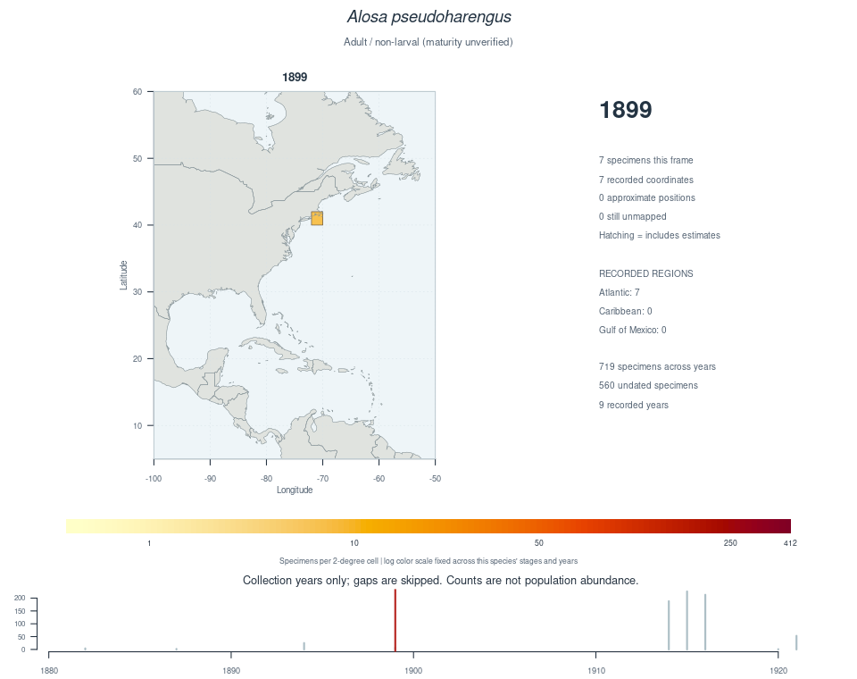
1899 · 7 specimens: 7 recorded coordinates, 0 approximate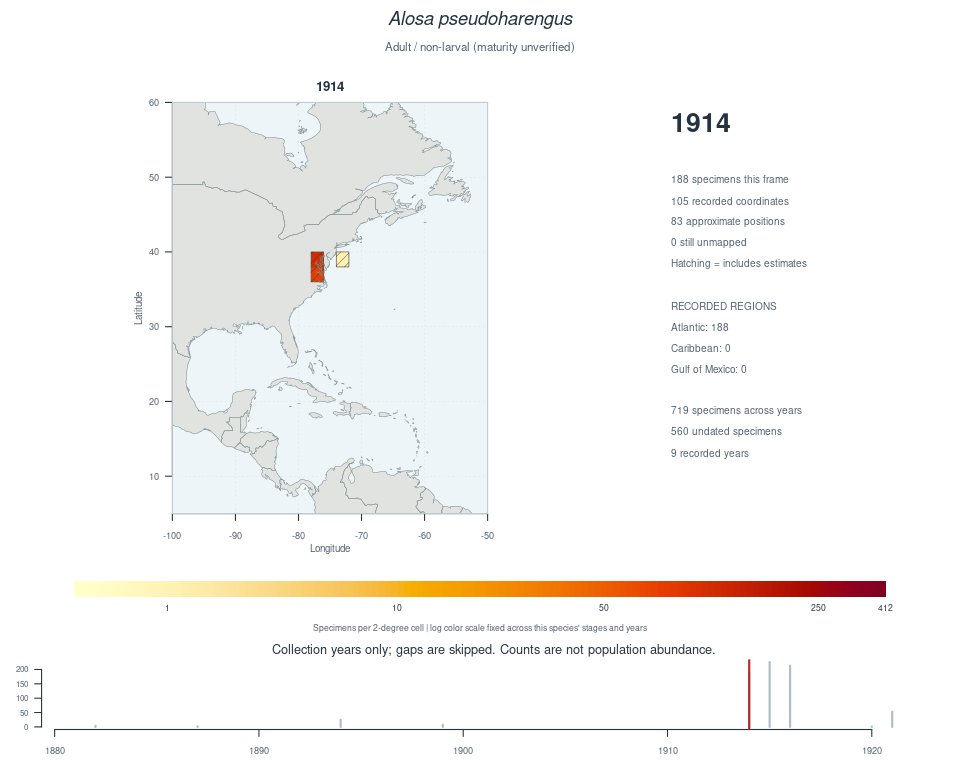
1914 · 188 specimens: 105 recorded coordinates, 83 approximate1915 · 226 specimens: 225 recorded coordinates, 1 approximate1916 · 213 specimens: 213 recorded coordinates, 0 approximate1920 · 1 specimens: 0 recorded coordinates, 1 approximate1921 · 53 specimens: 45 recorded coordinates, 8 approximateUndated · 560 specimens: 470 recorded coordinates, 90 approximate Larva: no specimens recorded.
Atherinomorus stipes 798 dated specimens through 1930 + 1 undated · 21 lots · 5 sampled years · 3 regions · 43% dated with recorded coordinates
455 specimens in 12 lots use approximate display positions.
Adult / non-larval (maturity unverified) 798 specimens · 343 recorded coordinates · 455 approximate positions
1884 Play GIF ← Year
1884 — 46 specimens (46 approximate)
1885 — 240 specimens (135 approximate)
1886 — 273 specimens (273 approximate)
1899 — 231 specimens (0 approximate)
1919 — 7 specimens (0 approximate)
Undated — 1 specimens (1 approximate)
→
Static geographic map · 1884
Open selected year PNG · Annual map PDF · Download GIF
Show all year maps
1884 · 46 specimens: 0 recorded coordinates, 46 approximate1885 · 240 specimens: 105 recorded coordinates, 135 approximate1886 · 273 specimens: 0 recorded coordinates, 273 approximate1899 · 231 specimens: 231 recorded coordinates, 0 approximate1919 · 7 specimens: 7 recorded coordinates, 0 approximate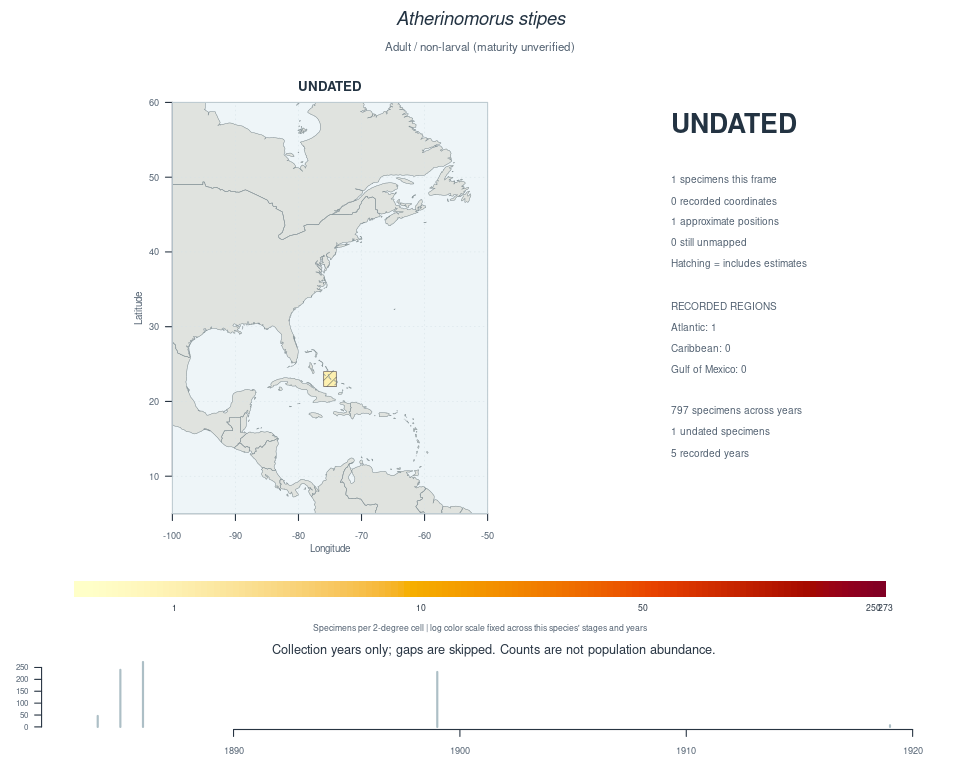
Undated · 1 specimens: 0 recorded coordinates, 1 approximate Larva 1 specimens · 1 recorded coordinates · 0 approximate positions
1919 Play GIF ← Year
1919 — 1 specimens (0 approximate)
→
Static geographic map · 1919
Open selected year PNG · Annual map PDF · Download GIF
Show all year maps
1919 · 1 specimens: 1 recorded coordinates, 0 approximate Stellifer lanceolatus 761 dated specimens through 1930 + 5 undated · 3 lots · 2 sampled years · 2 regions · 98% dated with recorded coordinates
16 specimens in 2 lots use approximate display positions.
Adult / non-larval (maturity unverified) 766 specimens · 750 recorded coordinates · 16 approximate positions
1915 Play GIF ← Year
1915 — 750 specimens (0 approximate)
1917 — 11 specimens (11 approximate)
Undated — 5 specimens (5 approximate)
→
Static geographic map · 1915
Open selected year PNG · Annual map PDF · Download GIF
Show all year maps
1915 · 750 specimens: 750 recorded coordinates, 0 approximate1917 · 11 specimens: 0 recorded coordinates, 11 approximateUndated · 5 specimens: 0 recorded coordinates, 5 approximate Larva: no specimens recorded.
Brevoortia tyrannus 446 dated specimens through 1930 + 258 undated · 65 lots · 12 sampled years · 1 regions · 30% dated with recorded coordinates
384 specimens in 36 lots use approximate display positions.
Adult / non-larval (maturity unverified) 704 specimens · 320 recorded coordinates · 384 approximate positions
1882 Play GIF ← Year
1882 — 7 specimens (3 approximate)
1887 — 3 specimens (3 approximate)
1891 — 7 specimens (2 approximate)
1892 — 97 specimens (3 approximate)
1893 — 34 specimens (34 approximate)
1894 — 27 specimens (27 approximate)
1895 — 7 specimens (7 approximate)
1899 — 3 specimens (3 approximate)
1914 — 8 specimens (7 approximate)
1916 — 57 specimens (29 approximate)
1920 — 21 specimens (21 approximate)
1921 — 175 specimens (97 approximate)
Undated — 258 specimens (148 approximate)
→
Static geographic map · 1882
Open selected year PNG · Annual map PDF · Download GIF
Show all year maps
1882 · 7 specimens: 4 recorded coordinates, 3 approximate1887 · 3 specimens: 0 recorded coordinates, 3 approximate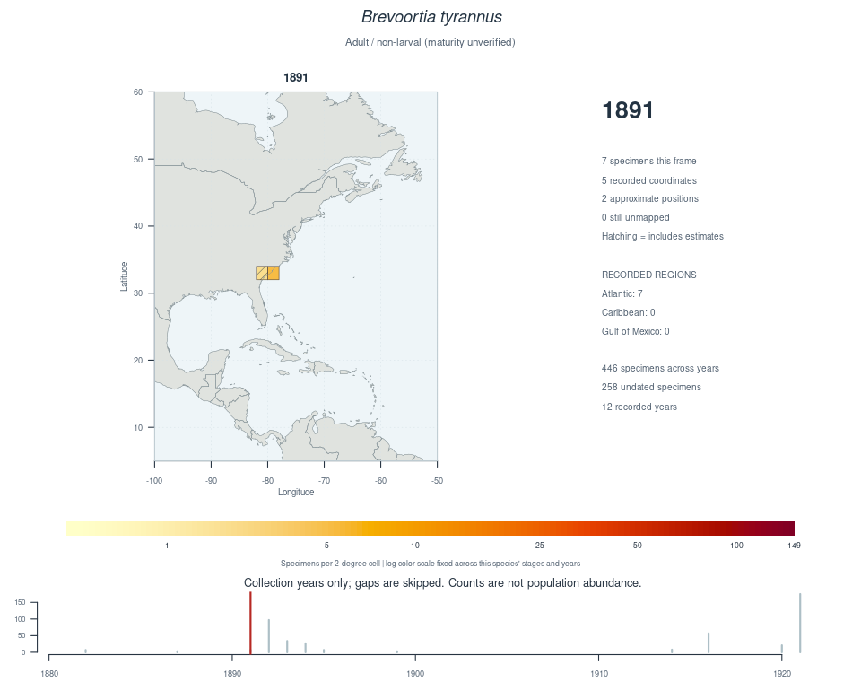
1891 · 7 specimens: 5 recorded coordinates, 2 approximate1892 · 97 specimens: 94 recorded coordinates, 3 approximate1893 · 34 specimens: 0 recorded coordinates, 34 approximate1894 · 27 specimens: 0 recorded coordinates, 27 approximate1895 · 7 specimens: 0 recorded coordinates, 7 approximate1899 · 3 specimens: 0 recorded coordinates, 3 approximate1914 · 8 specimens: 1 recorded coordinates, 7 approximate1916 · 57 specimens: 28 recorded coordinates, 29 approximate1920 · 21 specimens: 0 recorded coordinates, 21 approximate1921 · 175 specimens: 78 recorded coordinates, 97 approximate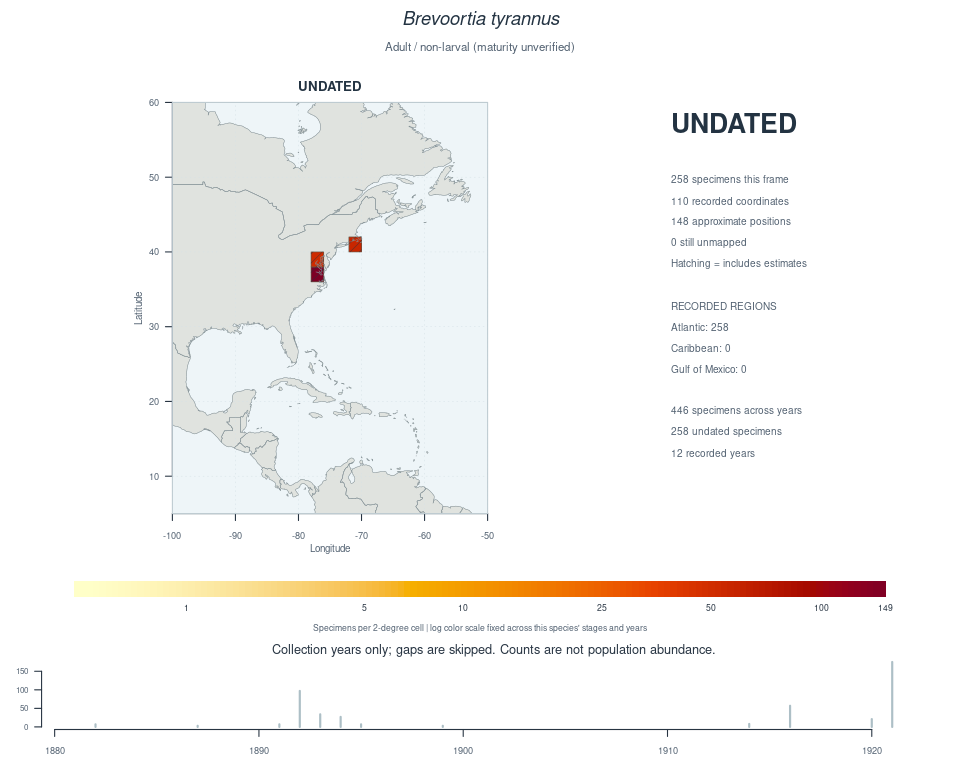
Undated · 258 specimens: 110 recorded coordinates, 148 approximate Larva: no specimens recorded.
Anchoa mitchilli 617 dated specimens through 1930 + 20 undated · 41 lots · 9 sampled years · 2 regions · 67% dated with recorded coordinates
190 specimens in 20 lots use approximate display positions.
Adult / non-larval (maturity unverified) 386 specimens · 196 recorded coordinates · 190 approximate positions
1882 Play GIF ← Year
1882 — 61 specimens (22 approximate)
1891 — 9 specimens (8 approximate)
1892 — 12 specimens (1 approximate)
1914 — 15 specimens (15 approximate)
1915 — 52 specimens (0 approximate)
1916 — 26 specimens (0 approximate)
1917 — 45 specimens (12 approximate)
1920 — 60 specimens (57 approximate)
1921 — 86 specimens (73 approximate)
Undated — 20 specimens (2 approximate)
→
Static geographic map · 1882
Open selected year PNG · Annual map PDF · Download GIF
Show all year maps
1882 · 61 specimens: 39 recorded coordinates, 22 approximate1891 · 9 specimens: 1 recorded coordinates, 8 approximate1892 · 12 specimens: 11 recorded coordinates, 1 approximate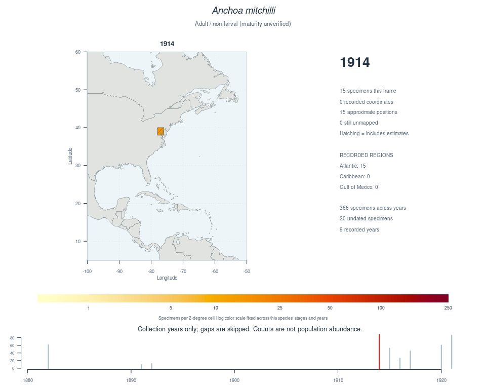
1914 · 15 specimens: 0 recorded coordinates, 15 approximate1915 · 52 specimens: 52 recorded coordinates, 0 approximate1916 · 26 specimens: 26 recorded coordinates, 0 approximate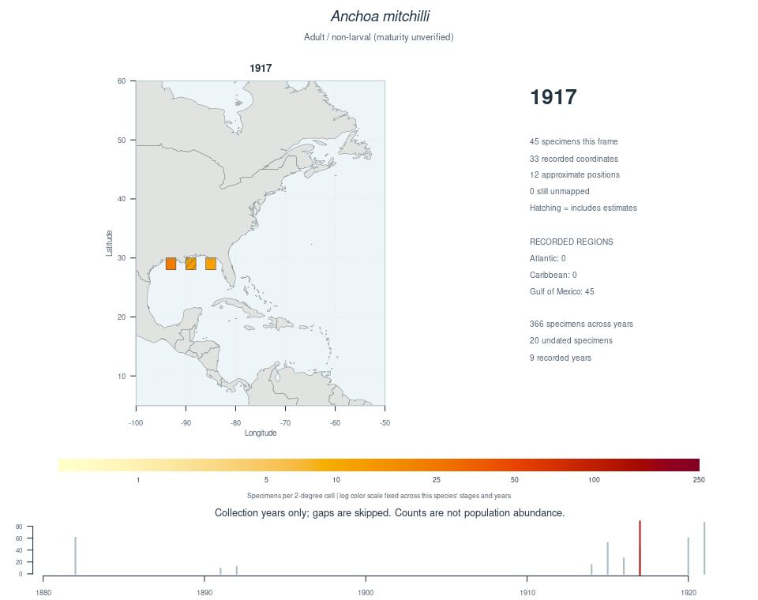
1917 · 45 specimens: 33 recorded coordinates, 12 approximate1920 · 60 specimens: 3 recorded coordinates, 57 approximate1921 · 86 specimens: 13 recorded coordinates, 73 approximateUndated · 20 specimens: 18 recorded coordinates, 2 approximate Larva 251 specimens · 251 recorded coordinates · 0 approximate positions
1915 Play GIF ← Year
1915 — 250 specimens (0 approximate)
1920 — 1 specimens (0 approximate)
→
Static geographic map · 1915
Open selected year PNG · Annual map PDF · Download GIF
Show all year maps
1915 · 250 specimens: 250 recorded coordinates, 0 approximate1920 · 1 specimens: 1 recorded coordinates, 0 approximate Menidia menidia 359 dated specimens through 1930 + 0 undated · 62 lots · 13 sampled years · 1 regions · 68% dated with recorded coordinates
114 specimens in 21 lots use approximate display positions.
Adult / non-larval (maturity unverified) 347 specimens · 233 recorded coordinates · 114 approximate positions
1882 Play GIF ← Year
1882 — 1 specimens (1 approximate)
1885 — 22 specimens (0 approximate)
1887 — 4 specimens (0 approximate)
1890 — 2 specimens (0 approximate)
1891 — 97 specimens (49 approximate)
1892 — 113 specimens (43 approximate)
1895 — 9 specimens (0 approximate)
1899 — 11 specimens (0 approximate)
1914 — 13 specimens (12 approximate)
1915 — 34 specimens (0 approximate)
1916 — 32 specimens (0 approximate)
1920 — 8 specimens (8 approximate)
1921 — 1 specimens (1 approximate)
→
Static geographic map · 1882
Open selected year PNG · Annual map PDF · Download GIF
Show all year maps
1882 · 1 specimens: 0 recorded coordinates, 1 approximate1885 · 22 specimens: 22 recorded coordinates, 0 approximate1887 · 4 specimens: 4 recorded coordinates, 0 approximate1890 · 2 specimens: 2 recorded coordinates, 0 approximate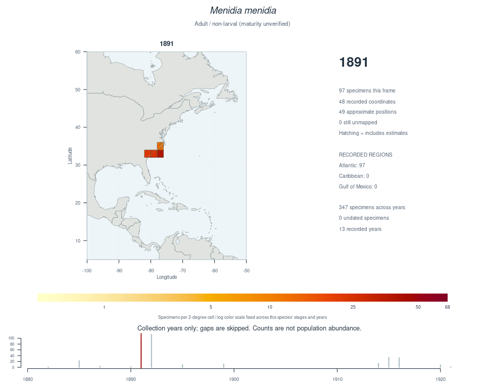
1891 · 97 specimens: 48 recorded coordinates, 49 approximate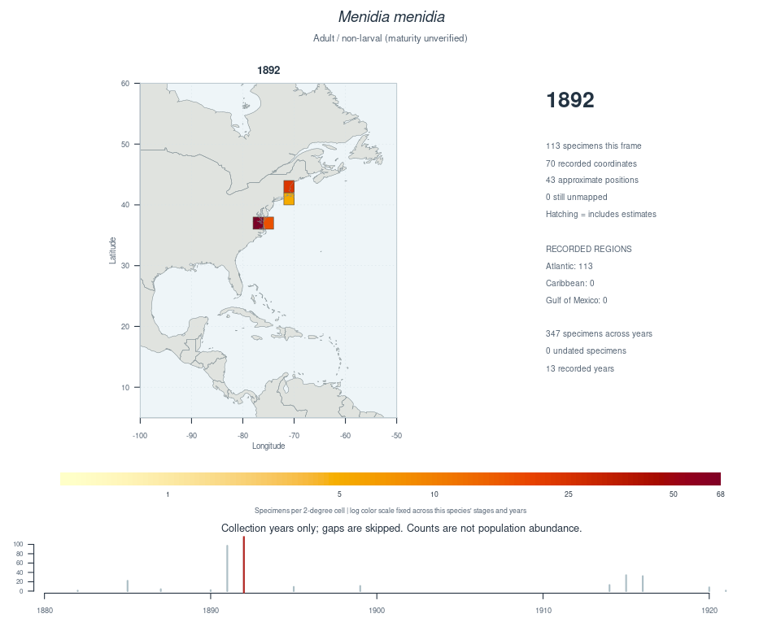
1892 · 113 specimens: 70 recorded coordinates, 43 approximate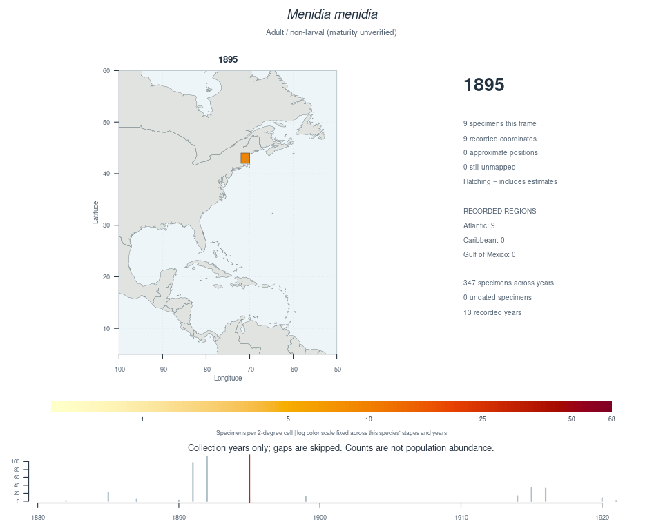
1895 · 9 specimens: 9 recorded coordinates, 0 approximate1899 · 11 specimens: 11 recorded coordinates, 0 approximate1914 · 13 specimens: 1 recorded coordinates, 12 approximate1915 · 34 specimens: 34 recorded coordinates, 0 approximate1916 · 32 specimens: 32 recorded coordinates, 0 approximate1920 · 8 specimens: 0 recorded coordinates, 8 approximate1921 · 1 specimens: 0 recorded coordinates, 1 approximate Larva 12 specimens · 12 recorded coordinates · 0 approximate positions
1916 Play GIF ← Year
1916 — 12 specimens (0 approximate)
→
Static geographic map · 1916
Open selected year PNG · Annual map PDF · Download GIF
Show all year maps
1916 · 12 specimens: 12 recorded coordinates, 0 approximate Gonichthys cocco 351 dated specimens through 1930 + 3 undated · 23 lots · 2 sampled years · 2 regions · 99% dated with recorded coordinates
1 specimens in 1 lots use approximate display positions.
Adult / non-larval (maturity unverified) 354 specimens · 353 recorded coordinates · 1 approximate positions
1885 Play GIF ← Year
1885 — 121 specimens (1 approximate)
1886 — 230 specimens (0 approximate)
Undated — 3 specimens (0 approximate)
→
Static geographic map · 1885
Open selected year PNG · Annual map PDF · Download GIF
Show all year maps
1885 · 121 specimens: 120 recorded coordinates, 1 approximate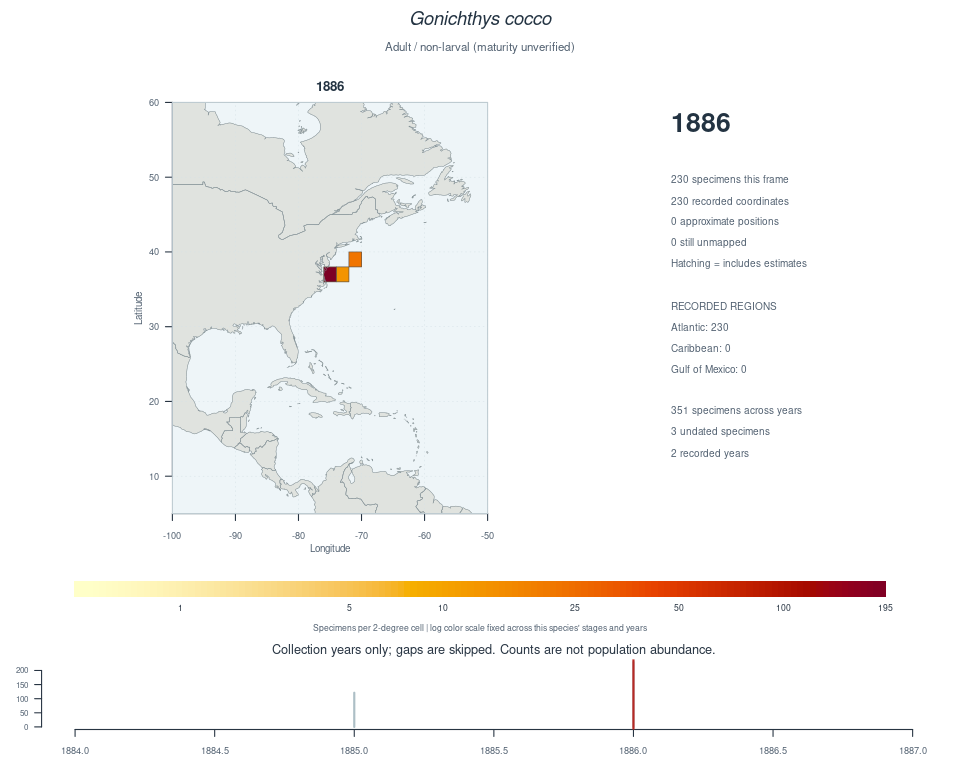
1886 · 230 specimens: 230 recorded coordinates, 0 approximateUndated · 3 specimens: 3 recorded coordinates, 0 approximate Larva: no specimens recorded.
Jenkinsia stolifera 344 dated specimens through 1930 + 0 undated · 11 lots · 3 sampled years · 3 regions · 7% dated with recorded coordinates
319 specimens in 10 lots use approximate display positions.
Adult / non-larval (maturity unverified) 344 specimens · 25 recorded coordinates · 319 approximate positions
1885 Play GIF ← Year
1885 — 226 specimens (201 approximate)
1886 — 4 specimens (4 approximate)
1919 — 114 specimens (114 approximate)
→
Static geographic map · 1885
Open selected year PNG · Annual map PDF · Download GIF
Show all year maps
1885 · 226 specimens: 25 recorded coordinates, 201 approximate1886 · 4 specimens: 0 recorded coordinates, 4 approximate1919 · 114 specimens: 0 recorded coordinates, 114 approximate Larva: no specimens recorded.
Citharichthys arctifrons 282 dated specimens through 1930 + 0 undated · 39 lots · 10 sampled years · 2 regions · 85% dated with recorded coordinates
43 specimens in 4 lots use approximate display positions.
Adult / non-larval (maturity unverified) 222 specimens · 179 recorded coordinates · 43 approximate positions
1880 Play GIF ← Year
1880 — 43 specimens (37 approximate)
1881 — 8 specimens (0 approximate)
1883 — 25 specimens (2 approximate)
1884 — 74 specimens (0 approximate)
1885 — 29 specimens (0 approximate)
1899 — 20 specimens (0 approximate)
1902 — 9 specimens (0 approximate)
1903 — 5 specimens (4 approximate)
1913 — 4 specimens (0 approximate)
1919 — 5 specimens (0 approximate)
→
Static geographic map · 1880
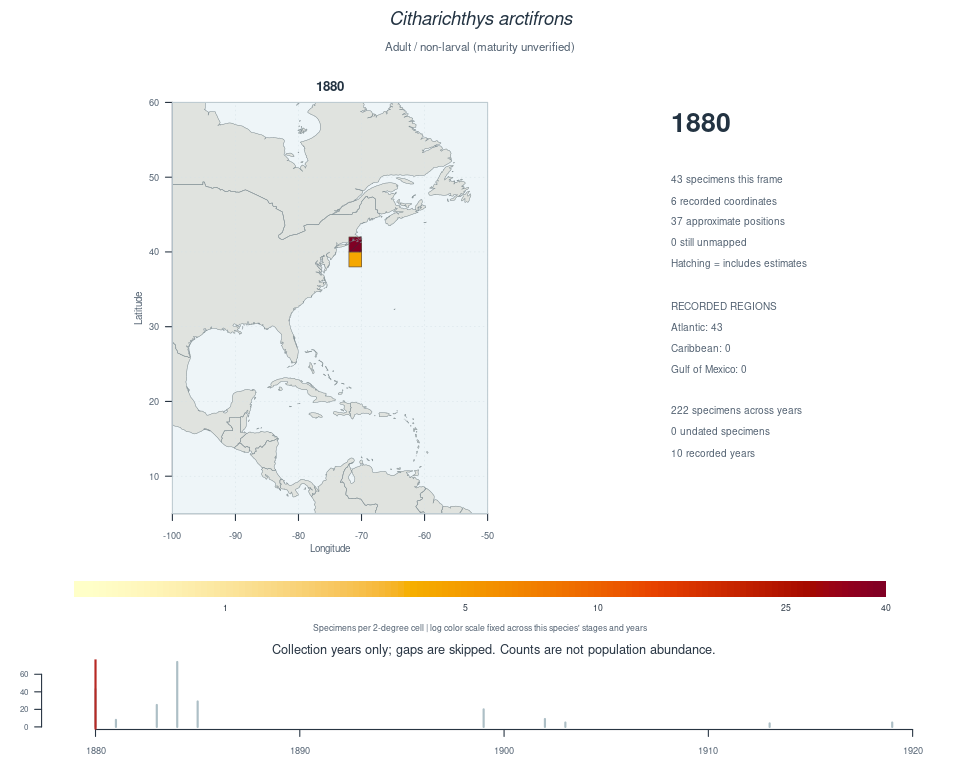
Open selected year PNG · Annual map PDF · Download GIF
Show all year maps
1880 · 43 specimens: 6 recorded coordinates, 37 approximate1881 · 8 specimens: 8 recorded coordinates, 0 approximate1883 · 25 specimens: 23 recorded coordinates, 2 approximate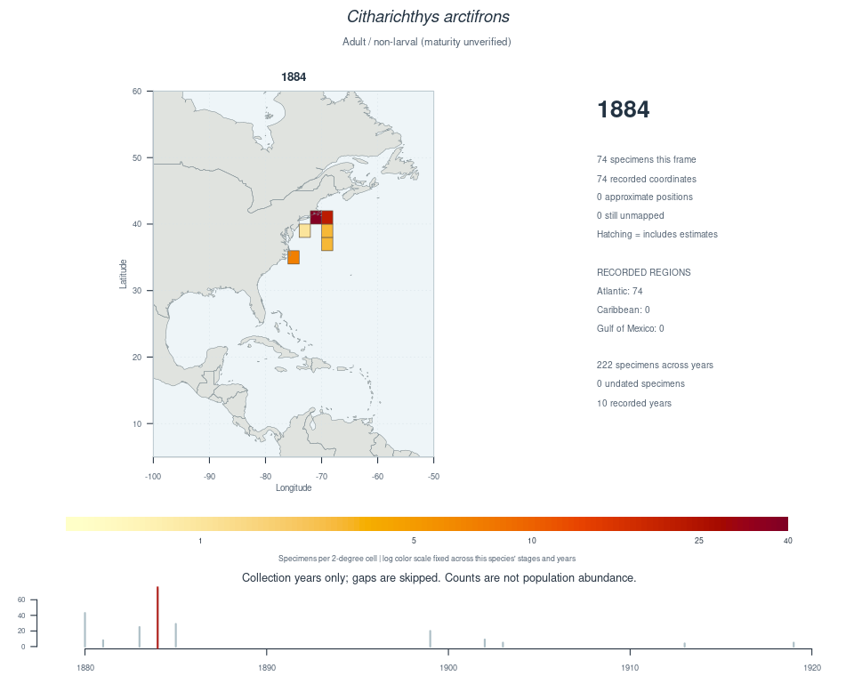
1884 · 74 specimens: 74 recorded coordinates, 0 approximate1885 · 29 specimens: 29 recorded coordinates, 0 approximate1899 · 20 specimens: 20 recorded coordinates, 0 approximate1902 · 9 specimens: 9 recorded coordinates, 0 approximate1903 · 5 specimens: 1 recorded coordinates, 4 approximate1913 · 4 specimens: 4 recorded coordinates, 0 approximate1919 · 5 specimens: 5 recorded coordinates, 0 approximate Larva 60 specimens · 60 recorded coordinates · 0 approximate positions
1913 Play GIF ← Year
1913 — 60 specimens (0 approximate)
→
Static geographic map · 1913
Open selected year PNG · Annual map PDF · Download GIF
Show all year maps
1913 · 60 specimens: 60 recorded coordinates, 0 approximate Gambusia affinis 281 dated specimens through 1930 + 0 undated · 3 lots · 2 sampled years · 2 regions · 100% dated with recorded coordinates
0 specimens in 0 lots use approximate display positions.
Adult / non-larval (maturity unverified) 281 specimens · 281 recorded coordinates · 0 approximate positions
1916 Play GIF ← Year
1916 — 256 specimens (0 approximate)
1917 — 25 specimens (0 approximate)
→
Static geographic map · 1916
Open selected year PNG · Annual map PDF · Download GIF
Show all year maps
1916 · 256 specimens: 256 recorded coordinates, 0 approximate1917 · 25 specimens: 25 recorded coordinates, 0 approximate Larva: no specimens recorded.
Poecilia vivipara 254 dated specimens through 1930 + 0 undated · 5 lots · 1 sampled years · 1 regions · 100% dated with recorded coordinates
0 specimens in 0 lots use approximate display positions.
Adult / non-larval (maturity unverified) 254 specimens · 254 recorded coordinates · 0 approximate positions
1899 Play GIF ← Year
1899 — 254 specimens (0 approximate)
→
Static geographic map · 1899
Open selected year PNG · Annual map PDF · Download GIF
Show all year maps
1899 · 254 specimens: 254 recorded coordinates, 0 approximate Larva: no specimens recorded.
Exocoetus volitans 239 dated specimens through 1930 + 10 undated · 43 lots · 8 sampled years · 3 regions · 79% dated with recorded coordinates
52 specimens in 17 lots use approximate display positions.
Adult / non-larval (maturity unverified) 165 specimens · 134 recorded coordinates · 31 approximate positions
1884 Play GIF ← Year
1884 — 3 specimens (1 approximate)
1885 — 55 specimens (0 approximate)
1886 — 9 specimens (0 approximate)
1898 — 1 specimens (1 approximate)
1899 — 1 specimens (0 approximate)
1913 — 2 specimens (0 approximate)
1914 — 79 specimens (14 approximate)
1915 — 5 specimens (5 approximate)
Undated — 10 specimens (10 approximate)
→
Static geographic map · 1884
Open selected year PNG · Annual map PDF · Download GIF
Show all year maps
1884 · 3 specimens: 2 recorded coordinates, 1 approximate1885 · 55 specimens: 55 recorded coordinates, 0 approximate1886 · 9 specimens: 9 recorded coordinates, 0 approximate1898 · 1 specimens: 0 recorded coordinates, 1 approximate1899 · 1 specimens: 1 recorded coordinates, 0 approximate1913 · 2 specimens: 2 recorded coordinates, 0 approximate1914 · 79 specimens: 65 recorded coordinates, 14 approximate1915 · 5 specimens: 0 recorded coordinates, 5 approximateUndated · 10 specimens: 0 recorded coordinates, 10 approximate Larva 27 specimens · 12 recorded coordinates · 15 approximate positions
1914 Play GIF ← Year
1914 — 26 specimens (14 approximate)
1915 — 1 specimens (1 approximate)
→
Static geographic map · 1914
Open selected year PNG · Annual map PDF · Download GIF
Show all year maps
1914 · 26 specimens: 12 recorded coordinates, 14 approximate1915 · 1 specimens: 0 recorded coordinates, 1 approximate Mixed larvae + non-larvae (unsplit) 57 specimens · 51 recorded coordinates · 6 approximate positions
1885 Play GIF ← Year
1885 — 2 specimens (0 approximate)
1914 — 55 specimens (6 approximate)
→
Static geographic map · 1885
Open selected year PNG · Annual map PDF · Download GIF
Show all year maps
1885 · 2 specimens: 2 recorded coordinates, 0 approximate1914 · 55 specimens: 49 recorded coordinates, 6 approximate Bothus ocellatus 236 dated specimens through 1930 + 0 undated · 60 lots · 9 sampled years · 3 regions · 96% dated with recorded coordinates
10 specimens in 3 lots use approximate display positions.
Adult / non-larval (maturity unverified) 37 specimens · 36 recorded coordinates · 1 approximate positions
1885 Play GIF ← Year
1885 — 23 specimens (0 approximate)
1899 — 1 specimens (0 approximate)
1901 — 1 specimens (1 approximate)
1902 — 8 specimens (0 approximate)
1917 — 2 specimens (0 approximate)
1919 — 2 specimens (0 approximate)
→
Static geographic map · 1885
Open selected year PNG · Annual map PDF · Download GIF
Show all year maps
1885 · 23 specimens: 23 recorded coordinates, 0 approximate1899 · 1 specimens: 1 recorded coordinates, 0 approximate1901 · 1 specimens: 0 recorded coordinates, 1 approximate1902 · 8 specimens: 8 recorded coordinates, 0 approximate1917 · 2 specimens: 2 recorded coordinates, 0 approximate1919 · 2 specimens: 2 recorded coordinates, 0 approximate Larva 199 specimens · 190 recorded coordinates · 9 approximate positions
1885 Play GIF ← Year
1885 — 1 specimens (1 approximate)
1913 — 3 specimens (0 approximate)
1914 — 111 specimens (0 approximate)
1915 — 8 specimens (8 approximate)
1917 — 1 specimens (0 approximate)
1919 — 75 specimens (0 approximate)
→
Static geographic map · 1885
Open selected year PNG · Annual map PDF · Download GIF
Show all year maps
1885 · 1 specimens: 0 recorded coordinates, 1 approximate1913 · 3 specimens: 3 recorded coordinates, 0 approximate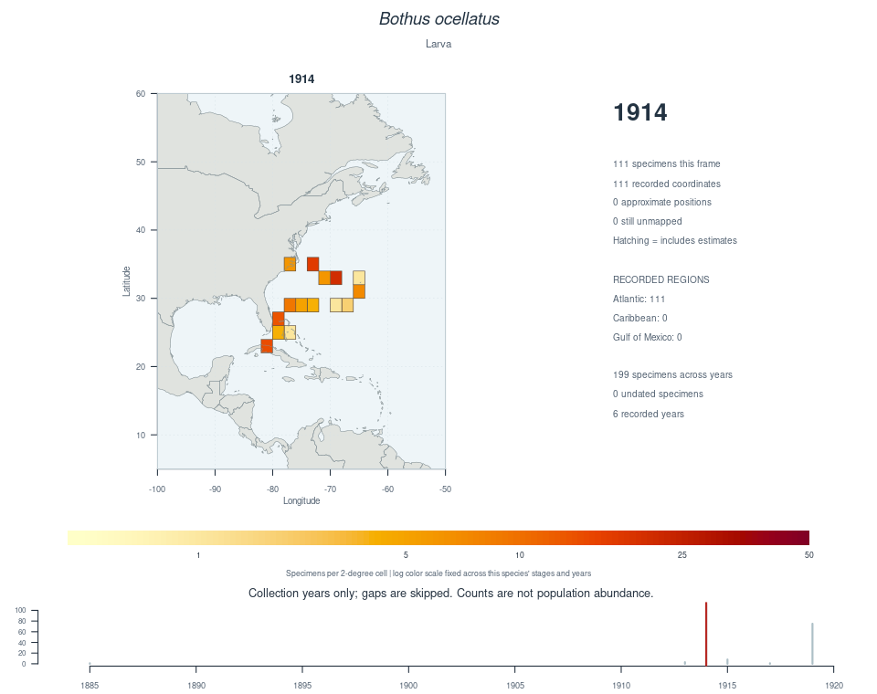
1914 · 111 specimens: 111 recorded coordinates, 0 approximate1915 · 8 specimens: 0 recorded coordinates, 8 approximate1917 · 1 specimens: 1 recorded coordinates, 0 approximate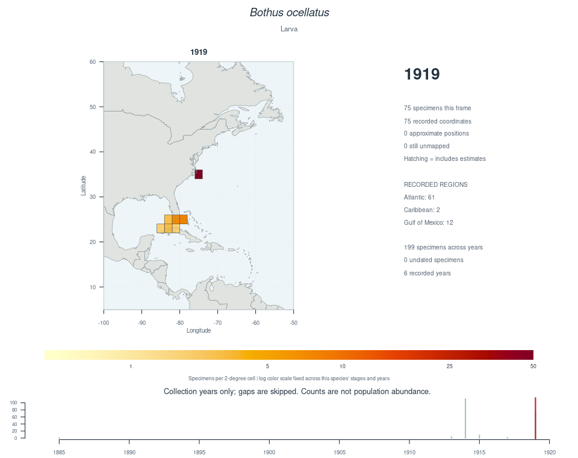
1919 · 75 specimens: 75 recorded coordinates, 0 approximate Monacanthus ciliatus 221 dated specimens through 1930 + 2 undated · 70 lots · 6 sampled years · 3 regions · 91% dated with recorded coordinates
19 specimens in 12 lots use approximate display positions.
Adult / non-larval (maturity unverified) 223 specimens · 204 recorded coordinates · 19 approximate positions
1884 Play GIF ← Year
1884 — 22 specimens (7 approximate)
1885 — 67 specimens (0 approximate)
1886 — 7 specimens (4 approximate)
1901 — 49 specimens (0 approximate)
1902 — 75 specimens (5 approximate)
1912 — 1 specimens (1 approximate)
Undated — 2 specimens (2 approximate)
→
Static geographic map · 1884
Open selected year PNG · Annual map PDF · Download GIF
Show all year maps
1884 · 22 specimens: 15 recorded coordinates, 7 approximate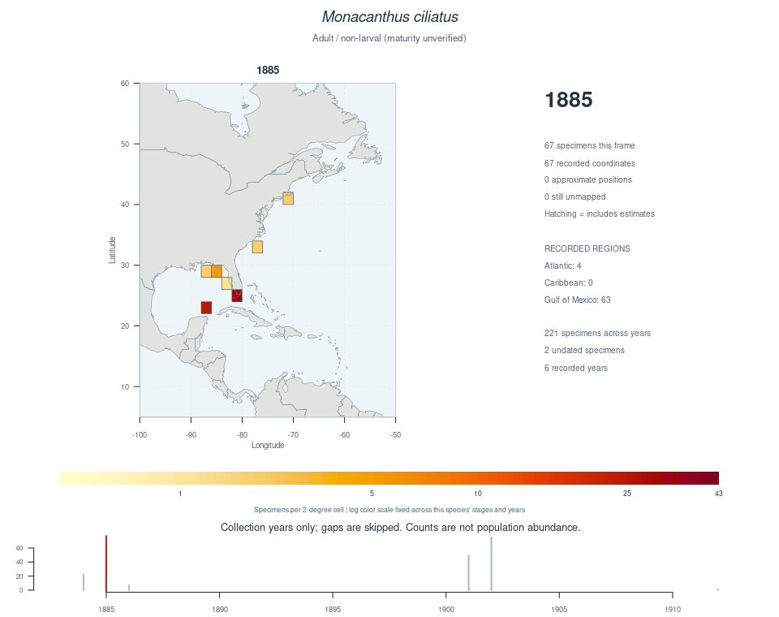
1885 · 67 specimens: 67 recorded coordinates, 0 approximate1886 · 7 specimens: 3 recorded coordinates, 4 approximate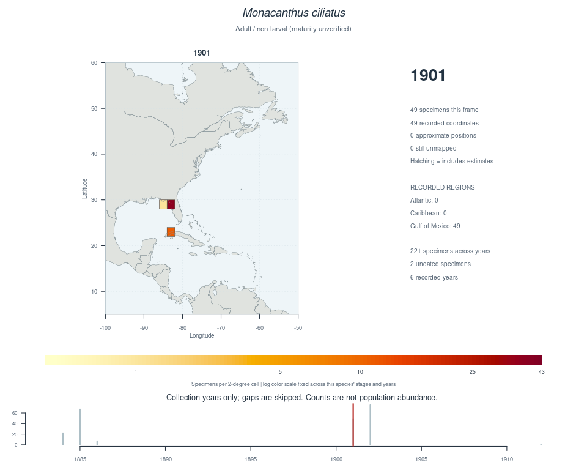
1901 · 49 specimens: 49 recorded coordinates, 0 approximate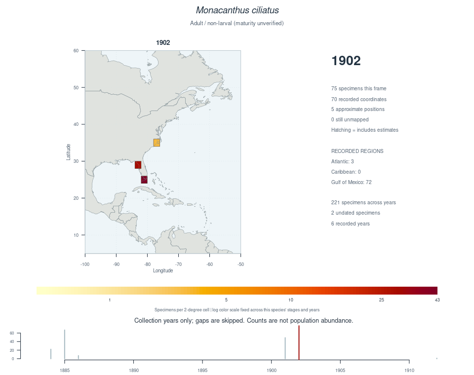
1902 · 75 specimens: 70 recorded coordinates, 5 approximate1912 · 1 specimens: 0 recorded coordinates, 1 approximateUndated · 2 specimens: 0 recorded coordinates, 2 approximate Larva: no specimens recorded.
Fundulus similis 222 dated specimens through 1930 + 0 undated · 12 lots · 3 sampled years · 1 regions · 100% dated with recorded coordinates
0 specimens in 0 lots use approximate display positions.
Adult / non-larval (maturity unverified) 222 specimens · 222 recorded coordinates · 0 approximate positions
1884 Play GIF ← Year
1884 — 162 specimens (0 approximate)
1885 — 21 specimens (0 approximate)
1898 — 39 specimens (0 approximate)
→
Static geographic map · 1884
Open selected year PNG · Annual map PDF · Download GIF
Show all year maps
1884 · 162 specimens: 162 recorded coordinates, 0 approximate1885 · 21 specimens: 21 recorded coordinates, 0 approximate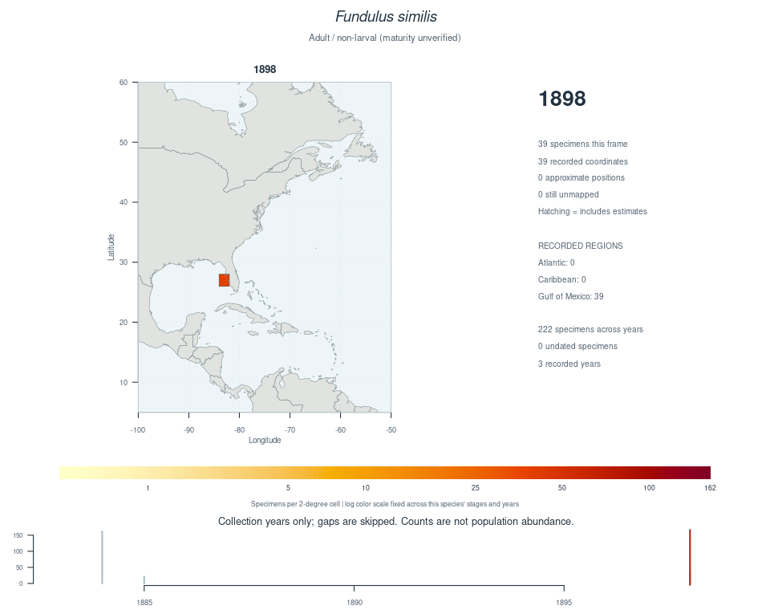
1898 · 39 specimens: 39 recorded coordinates, 0 approximate Larva: no specimens recorded.
Jenkinsia lamprotaenia 220 dated specimens through 1930 + 0 undated · 8 lots · 3 sampled years · 2 regions · 17% dated with recorded coordinates
183 specimens in 4 lots use approximate display positions.
Adult / non-larval (maturity unverified) 220 specimens · 37 recorded coordinates · 183 approximate positions
1884 Play GIF ← Year
1884 — 25 specimens (25 approximate)
1886 — 158 specimens (158 approximate)
1899 — 37 specimens (0 approximate)
→
Static geographic map · 1884
Open selected year PNG · Annual map PDF · Download GIF
Show all year maps
1884 · 25 specimens: 0 recorded coordinates, 25 approximate1886 · 158 specimens: 0 recorded coordinates, 158 approximate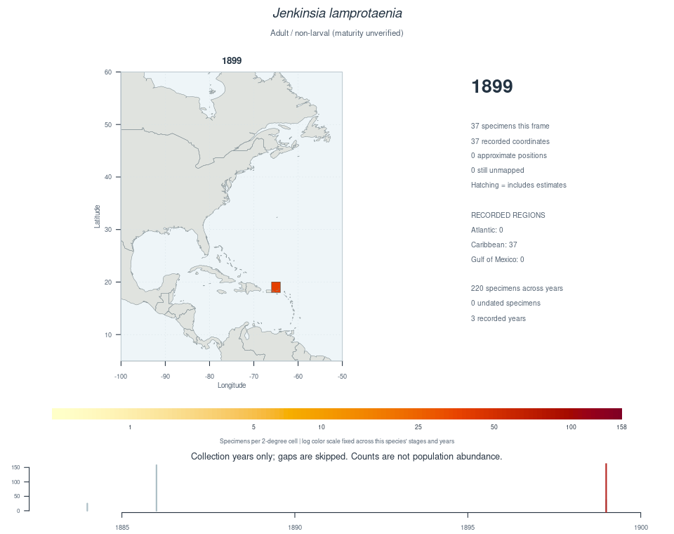
1899 · 37 specimens: 37 recorded coordinates, 0 approximate Larva: no specimens recorded.
Anchoa colonensis 211 dated specimens through 1930 + 0 undated · 5 lots · 1 sampled years · 1 regions · 0% dated with recorded coordinates
211 specimens in 5 lots use approximate display positions.
Adult / non-larval (maturity unverified) 211 specimens · 0 recorded coordinates · 211 approximate positions
1884 Play GIF ← Year
1884 — 211 specimens (211 approximate)
→
Static geographic map · 1884
Open selected year PNG · Annual map PDF · Download GIF
Show all year maps
1884 · 211 specimens: 0 recorded coordinates, 211 approximate Larva: no specimens recorded.
Anchoa cayorum 206 dated specimens through 1930 + 2 undated · 11 lots · 3 sampled years · 3 regions · 74% dated with recorded coordinates
53 specimens in 3 lots use approximate display positions.
Adult / non-larval (maturity unverified) 208 specimens · 155 recorded coordinates · 53 approximate positions
1885 Play GIF ← Year
1885 — 98 specimens (47 approximate)
1892 — 105 specimens (6 approximate)
1914 — 3 specimens (0 approximate)
Undated — 2 specimens (0 approximate)
→
Static geographic map · 1885
Open selected year PNG · Annual map PDF · Download GIF
Show all year maps
1885 · 98 specimens: 51 recorded coordinates, 47 approximate1892 · 105 specimens: 99 recorded coordinates, 6 approximate1914 · 3 specimens: 3 recorded coordinates, 0 approximate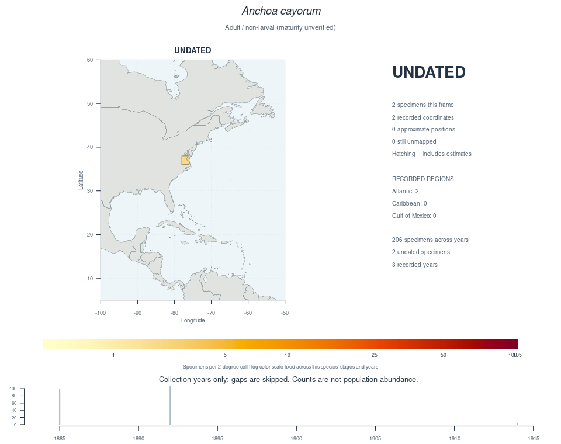
Undated · 2 specimens: 2 recorded coordinates, 0 approximate Larva: no specimens recorded.
Fenestraja plutonia 202 dated specimens through 1930 + 0 undated · 14 lots · 3 sampled years · 2 regions · 100% dated with recorded coordinates
0 specimens in 0 lots use approximate display positions.
Adult / non-larval (maturity unverified) 202 specimens · 202 recorded coordinates · 0 approximate positions
1885 Play GIF ← Year
1885 — 142 specimens (0 approximate)
1886 — 59 specimens (0 approximate)
1902 — 1 specimens (0 approximate)
→
Static geographic map · 1885
Open selected year PNG · Annual map PDF · Download GIF
Show all year maps
1885 · 142 specimens: 142 recorded coordinates, 0 approximate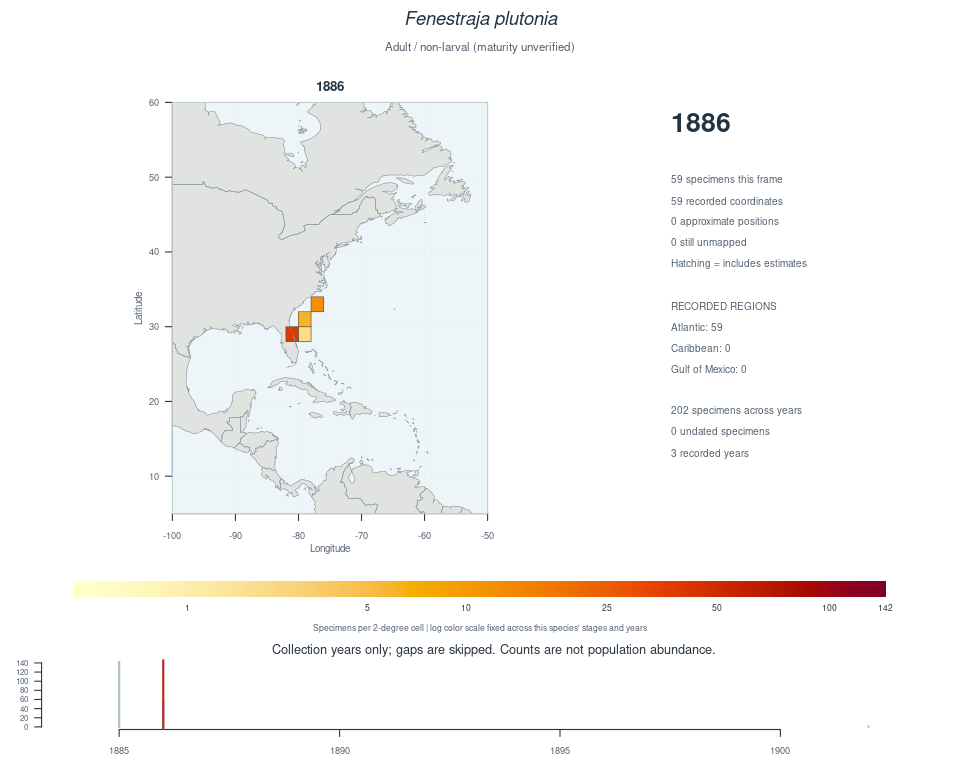
1886 · 59 specimens: 59 recorded coordinates, 0 approximate1902 · 1 specimens: 1 recorded coordinates, 0 approximate Larva: no specimens recorded.
Centropristis striata 200 dated specimens through 1930 + 0 undated · 24 lots · 10 sampled years · 1 regions · 96% dated with recorded coordinates
9 specimens in 3 lots use approximate display positions.
Adult / non-larval (maturity unverified) 200 specimens · 191 recorded coordinates · 9 approximate positions
1883 Play GIF ← Year
1883 — 1 specimens (0 approximate)
1884 — 3 specimens (0 approximate)
1885 — 2 specimens (0 approximate)
1890 — 8 specimens (2 approximate)
1892 — 165 specimens (1 approximate)
1894 — 6 specimens (6 approximate)
1897 — 2 specimens (0 approximate)
1899 — 10 specimens (0 approximate)
1915 — 1 specimens (0 approximate)
1916 — 2 specimens (0 approximate)
→
Static geographic map · 1883
Open selected year PNG · Annual map PDF · Download GIF
Show all year maps
1883 · 1 specimens: 1 recorded coordinates, 0 approximate1884 · 3 specimens: 3 recorded coordinates, 0 approximate1885 · 2 specimens: 2 recorded coordinates, 0 approximate1890 · 8 specimens: 6 recorded coordinates, 2 approximate1892 · 165 specimens: 164 recorded coordinates, 1 approximate1894 · 6 specimens: 0 recorded coordinates, 6 approximate1897 · 2 specimens: 2 recorded coordinates, 0 approximate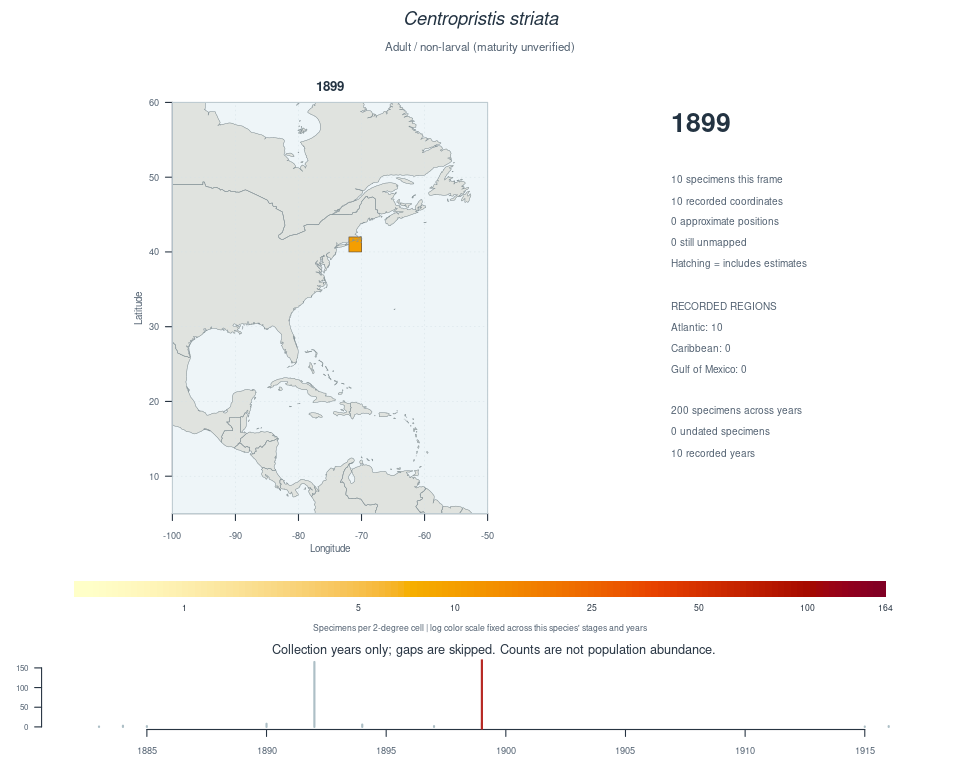
1899 · 10 specimens: 10 recorded coordinates, 0 approximate1915 · 1 specimens: 1 recorded coordinates, 0 approximate1916 · 2 specimens: 2 recorded coordinates, 0 approximate Larva: no specimens recorded.
Cyclothone microdon 191 dated specimens through 1930 + 0 undated · 31 lots · 7 sampled years · 3 regions · 100% dated with recorded coordinates
0 specimens in 0 lots use approximate display positions.
Adult / non-larval (maturity unverified) 144 specimens · 144 recorded coordinates · 0 approximate positions
1881 Play GIF ← Year
1881 — 2 specimens (0 approximate)
1883 — 45 specimens (0 approximate)
1884 — 17 specimens (0 approximate)
1885 — 22 specimens (0 approximate)
1886 — 47 specimens (0 approximate)
1887 — 11 specimens (0 approximate)
→
Static geographic map · 1881
Open selected year PNG · Annual map PDF · Download GIF
Show all year maps
1881 · 2 specimens: 2 recorded coordinates, 0 approximate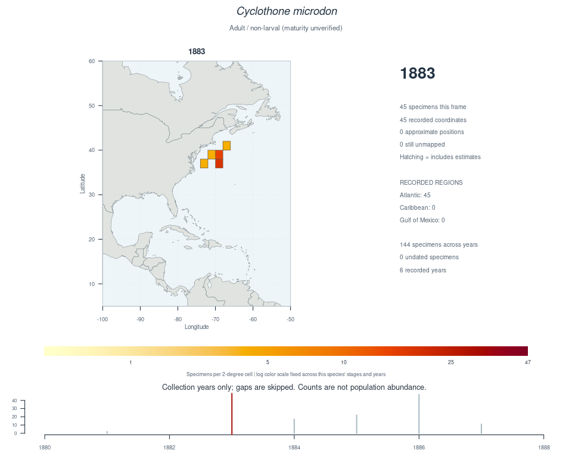
1883 · 45 specimens: 45 recorded coordinates, 0 approximate1884 · 17 specimens: 17 recorded coordinates, 0 approximate1885 · 22 specimens: 22 recorded coordinates, 0 approximate1886 · 47 specimens: 47 recorded coordinates, 0 approximate1887 · 11 specimens: 11 recorded coordinates, 0 approximate Larva 47 specimens · 47 recorded coordinates · 0 approximate positions
1919 Play GIF ← Year
1919 — 47 specimens (0 approximate)
→
Static geographic map · 1919
Open selected year PNG · Annual map PDF · Download GIF
Show all year maps
1919 · 47 specimens: 47 recorded coordinates, 0 approximate Glyptocephalus cynoglossus 139 dated specimens through 1930 + 39 undated · 87 lots · 8 sampled years · 1 regions · 77% dated with recorded coordinates
32 specimens in 5 lots use approximate display positions.
Adult / non-larval (maturity unverified) 178 specimens · 146 recorded coordinates · 32 approximate positions
1880 Play GIF ← Year
1880 — 12 specimens (2 approximate)
1881 — 20 specimens (0 approximate)
1882 — 10 specimens (0 approximate)
1883 — 29 specimens (0 approximate)
1884 — 26 specimens (0 approximate)
1885 — 33 specimens (0 approximate)
1886 — 5 specimens (0 approximate)
1887 — 4 specimens (0 approximate)
Undated — 39 specimens (30 approximate)
→
Static geographic map · 1880
Open selected year PNG · Annual map PDF · Download GIF
Show all year maps
1880 · 12 specimens: 10 recorded coordinates, 2 approximate1881 · 20 specimens: 20 recorded coordinates, 0 approximate1882 · 10 specimens: 10 recorded coordinates, 0 approximate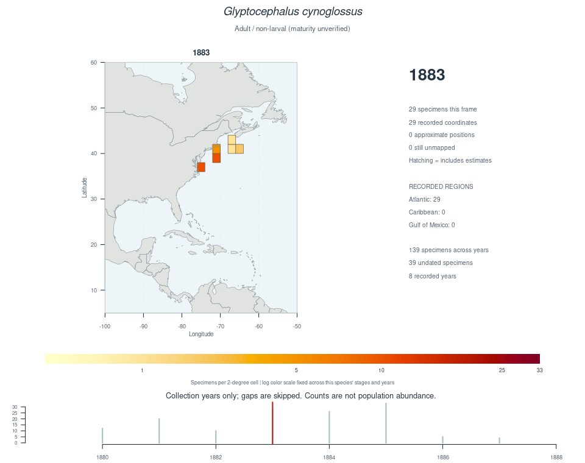
1883 · 29 specimens: 29 recorded coordinates, 0 approximate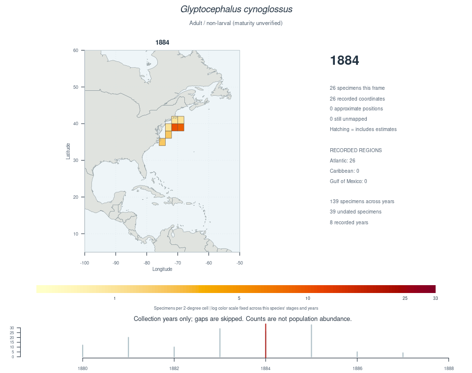
1884 · 26 specimens: 26 recorded coordinates, 0 approximate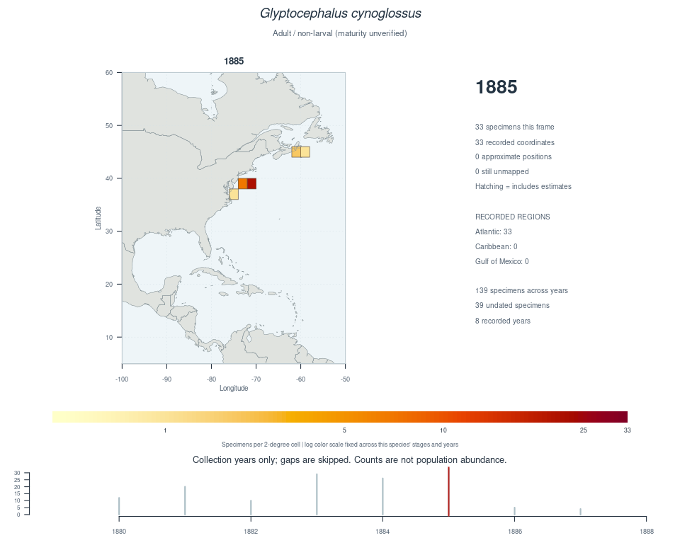
1885 · 33 specimens: 33 recorded coordinates, 0 approximate1886 · 5 specimens: 5 recorded coordinates, 0 approximate1887 · 4 specimens: 4 recorded coordinates, 0 approximate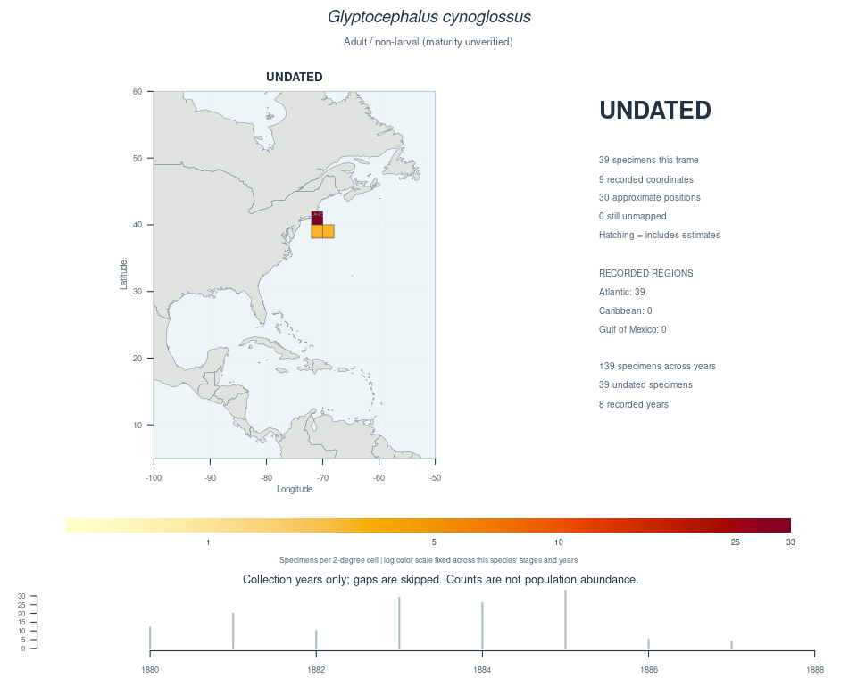
Undated · 39 specimens: 9 recorded coordinates, 30 approximate Larva: no specimens recorded.
Syngnathus fuscus 173 dated specimens through 1930 + 1 undated · 32 lots · 10 sampled years · 1 regions · 95% dated with recorded coordinates
9 specimens in 7 lots use approximate display positions.
Adult / non-larval (maturity unverified) 174 specimens · 165 recorded coordinates · 9 approximate positions
1880 Play GIF ← Year
1880 — 1 specimens (1 approximate)
1882 — 15 specimens (0 approximate)
1890 — 1 specimens (0 approximate)
1892 — 72 specimens (2 approximate)
1894 — 10 specimens (1 approximate)
1899 — 6 specimens (0 approximate)
1914 — 2 specimens (2 approximate)
1915 — 58 specimens (0 approximate)
1916 — 4 specimens (0 approximate)
1920 — 4 specimens (2 approximate)
Undated — 1 specimens (1 approximate)
→
Static geographic map · 1880
Open selected year PNG · Annual map PDF · Download GIF
Show all year maps
1880 · 1 specimens: 0 recorded coordinates, 1 approximate1882 · 15 specimens: 15 recorded coordinates, 0 approximate1890 · 1 specimens: 1 recorded coordinates, 0 approximate1892 · 72 specimens: 70 recorded coordinates, 2 approximate1894 · 10 specimens: 9 recorded coordinates, 1 approximate1899 · 6 specimens: 6 recorded coordinates, 0 approximate1914 · 2 specimens: 0 recorded coordinates, 2 approximate1915 · 58 specimens: 58 recorded coordinates, 0 approximate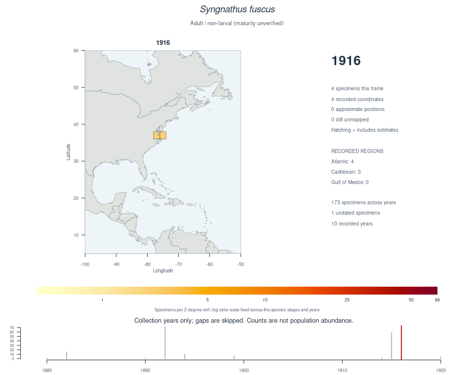
1916 · 4 specimens: 4 recorded coordinates, 0 approximate1920 · 4 specimens: 2 recorded coordinates, 2 approximateUndated · 1 specimens: 0 recorded coordinates, 1 approximate Larva: no specimens recorded.
Pomatomus saltatrix 161 dated specimens through 1930 + 10 undated · 3 lots · 2 sampled years · 1 regions · 91% dated with recorded coordinates
5 specimens in 1 lots use approximate display positions.
Adult / non-larval (maturity unverified) 5 specimens · 0 recorded coordinates · 5 approximate positions
1920 Play GIF ← Year
1920 — 5 specimens (5 approximate)
→
Static geographic map · 1920
Open selected year PNG · Annual map PDF · Download GIF
Show all year maps
1920 · 5 specimens: 0 recorded coordinates, 5 approximate Larva 166 specimens · 166 recorded coordinates · 0 approximate positions
1913 Play GIF ← Year
1913 — 156 specimens (0 approximate)
Undated — 10 specimens (0 approximate)
→
Static geographic map · 1913
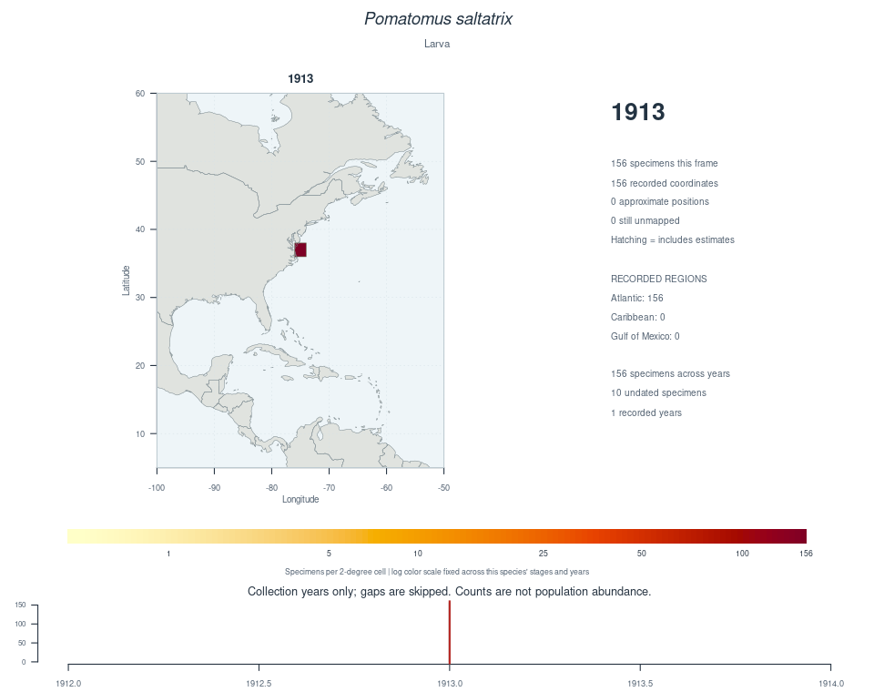
Open selected year PNG · Annual map PDF · Download GIF
Show all year maps
1913 · 156 specimens: 156 recorded coordinates, 0 approximateUndated · 10 specimens: 10 recorded coordinates, 0 approximate Membras martinica 161 dated specimens through 1930 + 0 undated · 13 lots · 5 sampled years · 1 regions · 80% dated with recorded coordinates
32 specimens in 5 lots use approximate display positions.
Adult / non-larval (maturity unverified) 161 specimens · 129 recorded coordinates · 32 approximate positions
1891 Play GIF ← Year
1891 — 24 specimens (24 approximate)
1892 — 68 specimens (1 approximate)
1915 — 48 specimens (0 approximate)
1916 — 14 specimens (0 approximate)
1920 — 7 specimens (7 approximate)
→
Static geographic map · 1891
Open selected year PNG · Annual map PDF · Download GIF
Show all year maps
1891 · 24 specimens: 0 recorded coordinates, 24 approximate1892 · 68 specimens: 67 recorded coordinates, 1 approximate1915 · 48 specimens: 48 recorded coordinates, 0 approximate1916 · 14 specimens: 14 recorded coordinates, 0 approximate1920 · 7 specimens: 0 recorded coordinates, 7 approximate Larva: no specimens recorded.
Decapterus punctatus 150 dated specimens through 1930 + 6 undated · 13 lots · 3 sampled years · 1 regions · 84% dated with recorded coordinates
25 specimens in 6 lots use approximate display positions.
Adult / non-larval (maturity unverified) 155 specimens · 131 recorded coordinates · 24 approximate positions
1885 Play GIF ← Year
1885 — 109 specimens (0 approximate)
1914 — 20 specimens (4 approximate)
1915 — 20 specimens (14 approximate)
Undated — 6 specimens (6 approximate)
→
Static geographic map · 1885
Open selected year PNG · Annual map PDF · Download GIF
Show all year maps
1885 · 109 specimens: 109 recorded coordinates, 0 approximate1914 · 20 specimens: 16 recorded coordinates, 4 approximate1915 · 20 specimens: 6 recorded coordinates, 14 approximateUndated · 6 specimens: 0 recorded coordinates, 6 approximate Larva 1 specimens · 0 recorded coordinates · 1 approximate positions
1914 Play GIF ← Year
1914 — 1 specimens (1 approximate)
→
Static geographic map · 1914
Open selected year PNG · Annual map PDF · Download GIF
Show all year maps
1914 · 1 specimens: 0 recorded coordinates, 1 approximate Nezumia bairdii 141 dated specimens through 1930 + 3 undated · 71 lots · 8 sampled years · 2 regions · 94% dated with recorded coordinates
5 specimens in 3 lots use approximate display positions.
Adult / non-larval (maturity unverified) 144 specimens · 139 recorded coordinates · 5 approximate positions
1880 Play GIF ← Year
1880 — 20 specimens (4 approximate)
1881 — 18 specimens (1 approximate)
1882 — 11 specimens (0 approximate)
1883 — 24 specimens (0 approximate)
1884 — 26 specimens (0 approximate)
1885 — 26 specimens (0 approximate)
1886 — 12 specimens (0 approximate)
1887 — 4 specimens (0 approximate)
Undated — 3 specimens (0 approximate)
→
Static geographic map · 1880
Open selected year PNG · Annual map PDF · Download GIF
Show all year maps
1880 · 20 specimens: 16 recorded coordinates, 4 approximate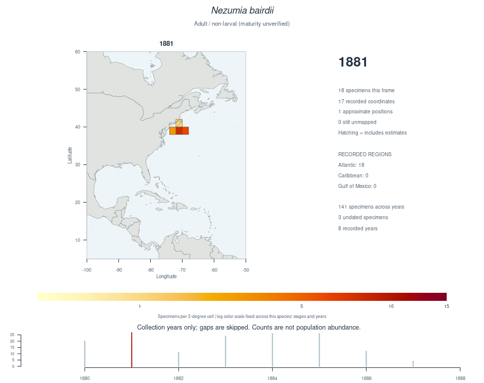
1881 · 18 specimens: 17 recorded coordinates, 1 approximate1882 · 11 specimens: 11 recorded coordinates, 0 approximate1883 · 24 specimens: 24 recorded coordinates, 0 approximate1884 · 26 specimens: 26 recorded coordinates, 0 approximate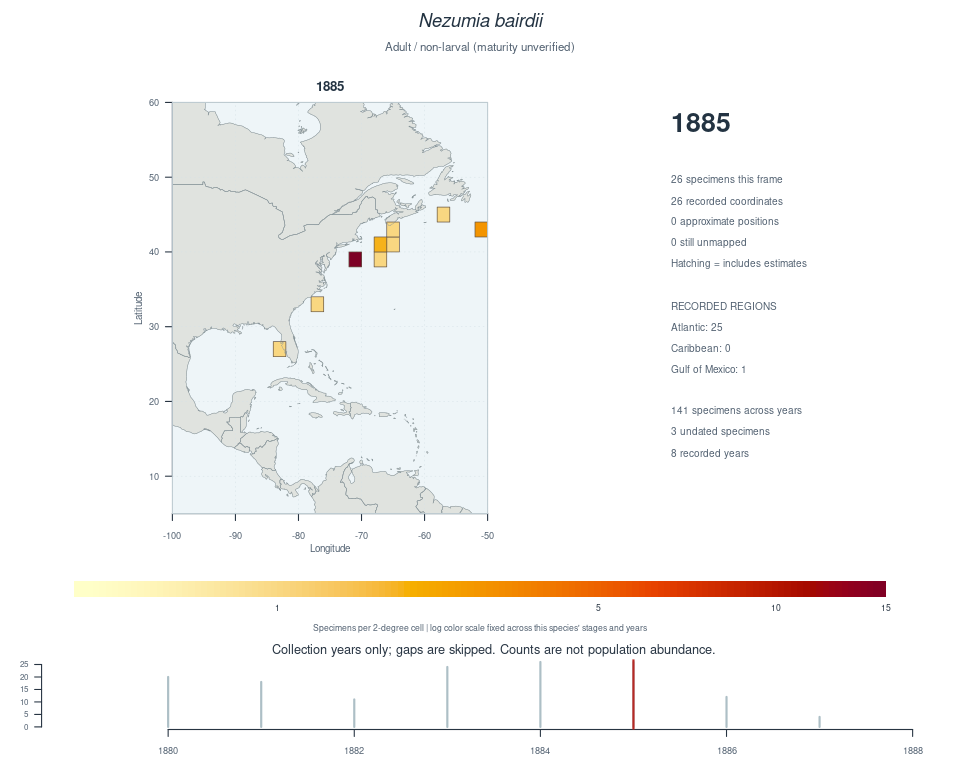
1885 · 26 specimens: 26 recorded coordinates, 0 approximate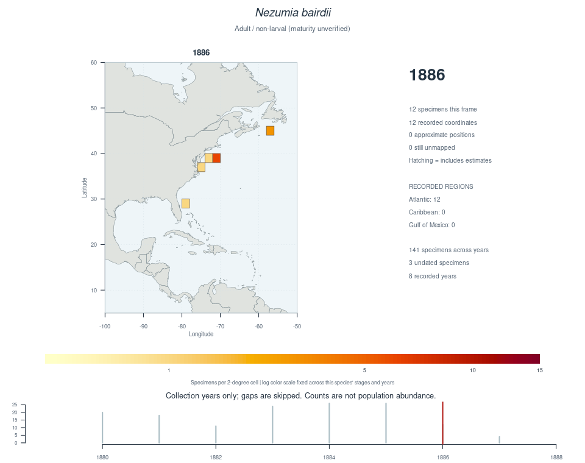
1886 · 12 specimens: 12 recorded coordinates, 0 approximate1887 · 4 specimens: 4 recorded coordinates, 0 approximateUndated · 3 specimens: 3 recorded coordinates, 0 approximate Larva: no specimens recorded.
Laemonema barbatulum 135 dated specimens through 1930 + 0 undated · 18 lots · 4 sampled years · 1 regions · 100% dated with recorded coordinates
0 specimens in 0 lots use approximate display positions.
Adult / non-larval (maturity unverified) 135 specimens · 135 recorded coordinates · 0 approximate positions
1883 Play GIF ← Year
1883 — 2 specimens (0 approximate)
1884 — 2 specimens (0 approximate)
1885 — 109 specimens (0 approximate)
1886 — 22 specimens (0 approximate)
→
Static geographic map · 1883
Open selected year PNG · Annual map PDF · Download GIF
Show all year maps
1883 · 2 specimens: 2 recorded coordinates, 0 approximate1884 · 2 specimens: 2 recorded coordinates, 0 approximate1885 · 109 specimens: 109 recorded coordinates, 0 approximate1886 · 22 specimens: 22 recorded coordinates, 0 approximate Larva: no specimens recorded.
Lagodon rhomboides 132 dated specimens through 1930 + 1 undated · 21 lots · 8 sampled years · 2 regions · 91% dated with recorded coordinates
12 specimens in 3 lots use approximate display positions.
Adult / non-larval (maturity unverified) 133 specimens · 121 recorded coordinates · 12 approximate positions
1883 Play GIF ← Year
1883 — 1 specimens (0 approximate)
1884 — 4 specimens (0 approximate)
1885 — 28 specimens (0 approximate)
1889 — 2 specimens (0 approximate)
1898 — 2 specimens (0 approximate)
1903 — 1 specimens (0 approximate)
1913 — 80 specimens (0 approximate)
1917 — 14 specimens (11 approximate)
Undated — 1 specimens (1 approximate)
→
Static geographic map · 1883
Open selected year PNG · Annual map PDF · Download GIF
Show all year maps
1883 · 1 specimens: 1 recorded coordinates, 0 approximate1884 · 4 specimens: 4 recorded coordinates, 0 approximate1885 · 28 specimens: 28 recorded coordinates, 0 approximate1889 · 2 specimens: 2 recorded coordinates, 0 approximate1898 · 2 specimens: 2 recorded coordinates, 0 approximate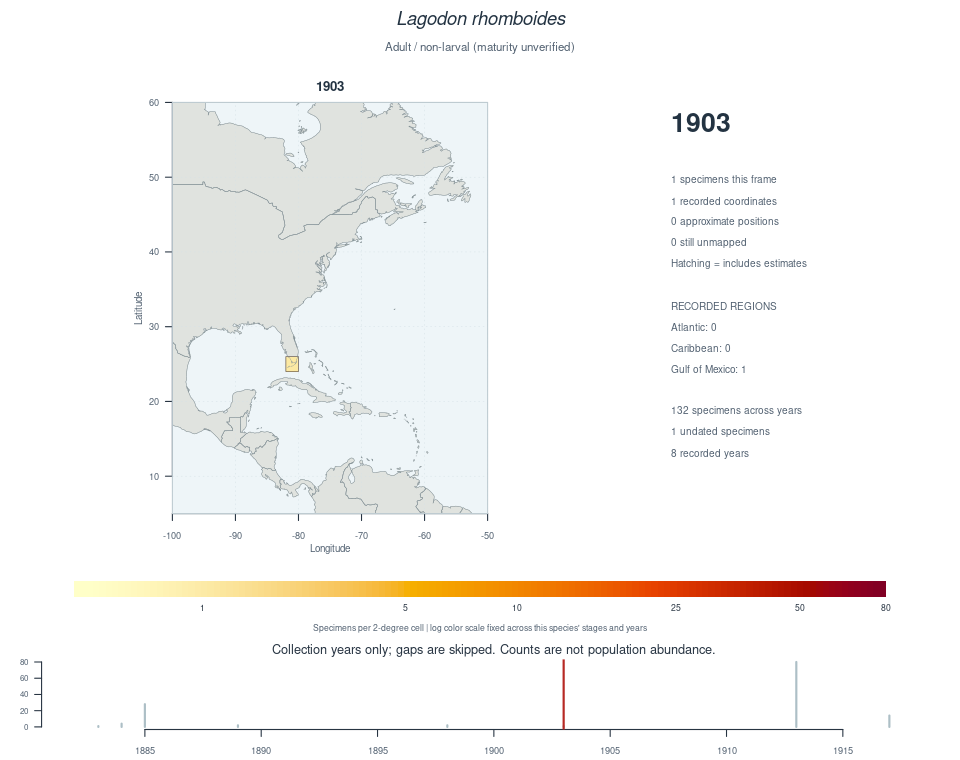
1903 · 1 specimens: 1 recorded coordinates, 0 approximate1913 · 80 specimens: 80 recorded coordinates, 0 approximate1917 · 14 specimens: 3 recorded coordinates, 11 approximateUndated · 1 specimens: 0 recorded coordinates, 1 approximate Larva: no specimens recorded.
Chloroscombrus chrysurus 123 dated specimens through 1930 + 0 undated · 12 lots · 5 sampled years · 3 regions · 89% dated with recorded coordinates
14 specimens in 4 lots use approximate display positions.
Adult / non-larval (maturity unverified) 100 specimens · 88 recorded coordinates · 12 approximate positions
1884 Play GIF ← Year
1884 — 20 specimens (10 approximate)
1885 — 32 specimens (0 approximate)
1915 — 2 specimens (2 approximate)
1919 — 46 specimens (0 approximate)
→
Static geographic map · 1884
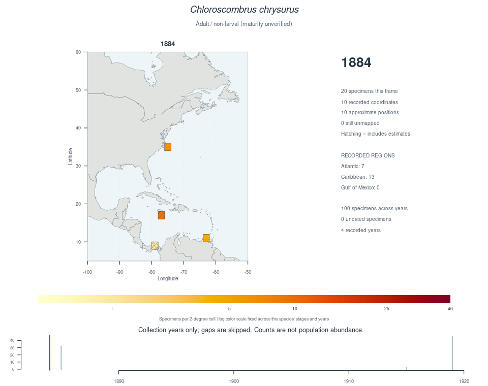
Open selected year PNG · Annual map PDF · Download GIF
Show all year maps
1884 · 20 specimens: 10 recorded coordinates, 10 approximate1885 · 32 specimens: 32 recorded coordinates, 0 approximate1915 · 2 specimens: 0 recorded coordinates, 2 approximate1919 · 46 specimens: 46 recorded coordinates, 0 approximate Larva 23 specimens · 21 recorded coordinates · 2 approximate positions
1885 Play GIF ← Year
1885 — 19 specimens (0 approximate)
1913 — 2 specimens (2 approximate)
1915 — 2 specimens (0 approximate)
→
Static geographic map · 1885
Open selected year PNG · Annual map PDF · Download GIF
Show all year maps
1885 · 19 specimens: 19 recorded coordinates, 0 approximate1913 · 2 specimens: 0 recorded coordinates, 2 approximate1915 · 2 specimens: 2 recorded coordinates, 0 approximate Haemulon aurolineatum 121 dated specimens through 1930 + 1 undated · 25 lots · 12 sampled years · 3 regions · 66% dated with recorded coordinates
41 specimens in 9 lots use approximate display positions.
Adult / non-larval (maturity unverified) 122 specimens · 81 recorded coordinates · 41 approximate positions
1884 Play GIF ← Year
1884 — 11 specimens (11 approximate)
1885 — 57 specimens (0 approximate)
1886 — 6 specimens (6 approximate)
1888 — 3 specimens (3 approximate)
1889 — 2 specimens (0 approximate)
1899 — 2 specimens (0 approximate)
1901 — 4 specimens (0 approximate)
1902 — 1 specimens (0 approximate)
1903 — 3 specimens (1 approximate)
1913 — 9 specimens (4 approximate)
1914 — 17 specimens (15 approximate)
1917 — 6 specimens (0 approximate)
Undated — 1 specimens (1 approximate)
→
Static geographic map · 1884
Open selected year PNG · Annual map PDF · Download GIF
Show all year maps
1884 · 11 specimens: 0 recorded coordinates, 11 approximate1885 · 57 specimens: 57 recorded coordinates, 0 approximate1886 · 6 specimens: 0 recorded coordinates, 6 approximate1888 · 3 specimens: 0 recorded coordinates, 3 approximate1889 · 2 specimens: 2 recorded coordinates, 0 approximate1899 · 2 specimens: 2 recorded coordinates, 0 approximate1901 · 4 specimens: 4 recorded coordinates, 0 approximate1902 · 1 specimens: 1 recorded coordinates, 0 approximate1903 · 3 specimens: 2 recorded coordinates, 1 approximate1913 · 9 specimens: 5 recorded coordinates, 4 approximate1914 · 17 specimens: 2 recorded coordinates, 15 approximate1917 · 6 specimens: 6 recorded coordinates, 0 approximateUndated · 1 specimens: 0 recorded coordinates, 1 approximate Larva: no specimens recorded.
Etropus crossotus 121 dated specimens through 1930 + 0 undated · 27 lots · 8 sampled years · 3 regions · 33% dated with recorded coordinates
81 specimens in 8 lots use approximate display positions.
Adult / non-larval (maturity unverified) 121 specimens · 40 recorded coordinates · 81 approximate positions
1884 Play GIF ← Year
1884 — 6 specimens (0 approximate)
1891 — 12 specimens (9 approximate)
1898 — 3 specimens (0 approximate)
1899 — 2 specimens (0 approximate)
1902 — 4 specimens (0 approximate)
1916 — 6 specimens (0 approximate)
1917 — 86 specimens (71 approximate)
1920 — 2 specimens (1 approximate)
→
Static geographic map · 1884
Open selected year PNG · Annual map PDF · Download GIF
Show all year maps
1884 · 6 specimens: 6 recorded coordinates, 0 approximate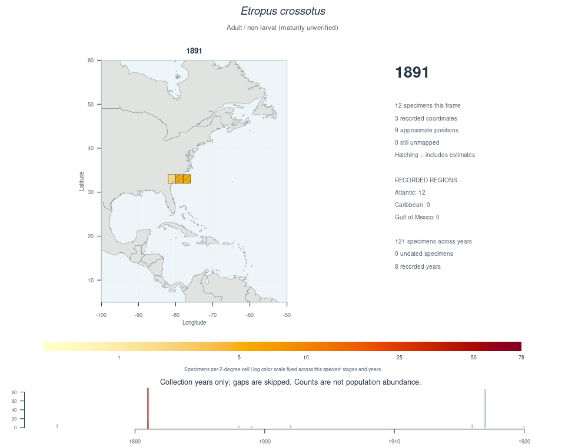
1891 · 12 specimens: 3 recorded coordinates, 9 approximate1898 · 3 specimens: 3 recorded coordinates, 0 approximate1899 · 2 specimens: 2 recorded coordinates, 0 approximate1902 · 4 specimens: 4 recorded coordinates, 0 approximate1916 · 6 specimens: 6 recorded coordinates, 0 approximate1917 · 86 specimens: 15 recorded coordinates, 71 approximate1920 · 2 specimens: 1 recorded coordinates, 1 approximate Larva: no specimens recorded.
Fundulus heteroclitus 110 dated specimens through 1930 + 10 undated · 15 lots · 6 sampled years · 2 regions · 92% dated with recorded coordinates
0 specimens in 0 lots use approximate display positions.
Adult / non-larval (maturity unverified) 120 specimens · 120 recorded coordinates · 0 approximate positions
1884 Play GIF ← Year
1884 — 1 specimens (0 approximate)
1885 — 12 specimens (0 approximate)
1891 — 25 specimens (0 approximate)
1892 — 16 specimens (0 approximate)
1898 — 54 specimens (0 approximate)
1917 — 2 specimens (0 approximate)
Undated — 10 specimens (0 approximate)
→
Static geographic map · 1884
Open selected year PNG · Annual map PDF · Download GIF
Show all year maps
1884 · 1 specimens: 1 recorded coordinates, 0 approximate1885 · 12 specimens: 12 recorded coordinates, 0 approximate1891 · 25 specimens: 25 recorded coordinates, 0 approximate1892 · 16 specimens: 16 recorded coordinates, 0 approximate1898 · 54 specimens: 54 recorded coordinates, 0 approximate1917 · 2 specimens: 2 recorded coordinates, 0 approximateUndated · 10 specimens: 10 recorded coordinates, 0 approximate Larva: no specimens recorded.
Atherina harringtonensis 78 dated specimens through 1930 + 36 undated · 7 lots · 1 sampled years · 2 regions · 0% dated with recorded coordinates
114 specimens in 7 lots use approximate display positions.
Adult / non-larval (maturity unverified) 114 specimens · 0 recorded coordinates · 114 approximate positions
1885 Play GIF ← Year
1885 — 78 specimens (78 approximate)
Undated — 36 specimens (36 approximate)
→
Static geographic map · 1885
Open selected year PNG · Annual map PDF · Download GIF
Show all year maps
1885 · 78 specimens: 0 recorded coordinates, 78 approximate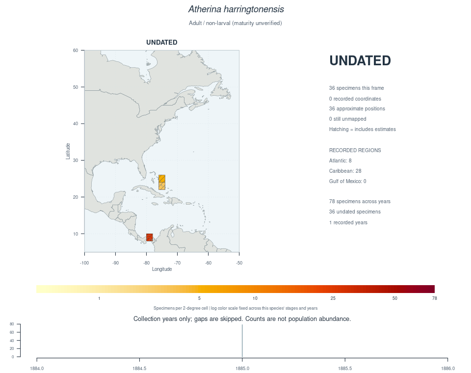
Undated · 36 specimens: 0 recorded coordinates, 36 approximate Larva: no specimens recorded.
Stephanolepis hispida 111 dated specimens through 1930 + 0 undated · 28 lots · 10 sampled years · 2 regions · 40% dated with recorded coordinates
67 specimens in 13 lots use approximate display positions.
Adult / non-larval (maturity unverified) 97 specimens · 42 recorded coordinates · 55 approximate positions
1881 Play GIF ← Year
1881 — 5 specimens (0 approximate)
1882 — 5 specimens (1 approximate)
1899 — 20 specimens (0 approximate)
1901 — 3 specimens (0 approximate)
1902 — 1 specimens (0 approximate)
1905 — 2 specimens (2 approximate)
1913 — 24 specimens (22 approximate)
1914 — 32 specimens (29 approximate)
1915 — 4 specimens (1 approximate)
1926 — 1 specimens (0 approximate)
→
Static geographic map · 1881
Open selected year PNG · Annual map PDF · Download GIF
Show all year maps
1881 · 5 specimens: 5 recorded coordinates, 0 approximate1882 · 5 specimens: 4 recorded coordinates, 1 approximate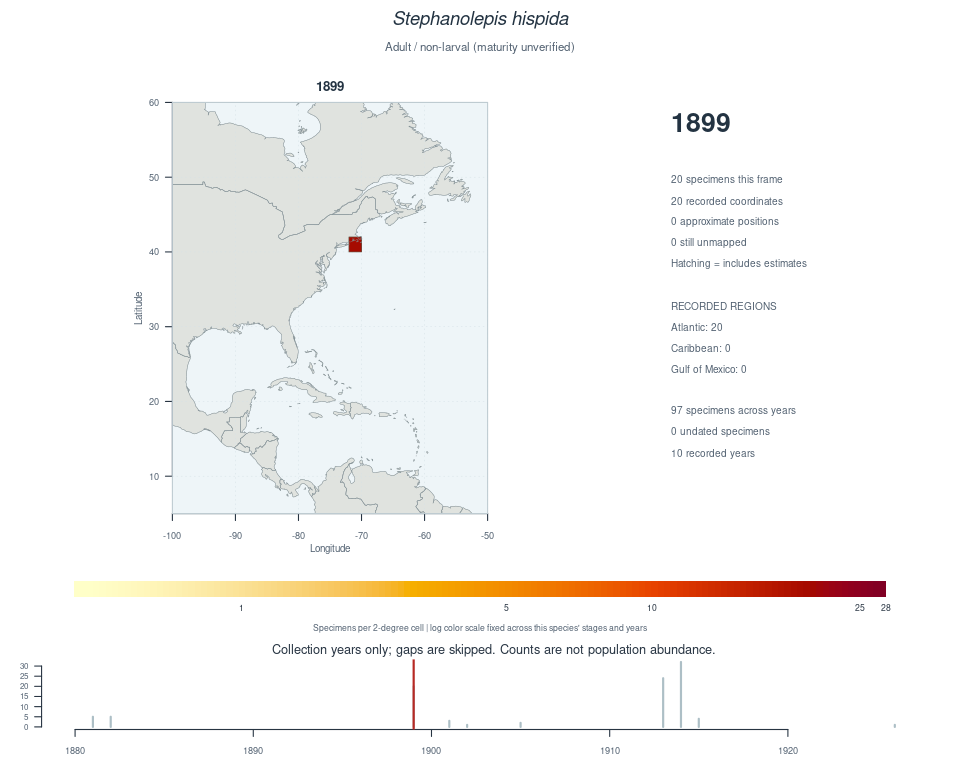
1899 · 20 specimens: 20 recorded coordinates, 0 approximate1901 · 3 specimens: 3 recorded coordinates, 0 approximate1902 · 1 specimens: 1 recorded coordinates, 0 approximate1905 · 2 specimens: 0 recorded coordinates, 2 approximate1913 · 24 specimens: 2 recorded coordinates, 22 approximate1914 · 32 specimens: 3 recorded coordinates, 29 approximate1915 · 4 specimens: 3 recorded coordinates, 1 approximate1926 · 1 specimens: 1 recorded coordinates, 0 approximate Larva 14 specimens · 2 recorded coordinates · 12 approximate positions
1913 Play GIF ← Year
1913 — 1 specimens (0 approximate)
1914 — 13 specimens (12 approximate)
→
Static geographic map · 1913
Open selected year PNG · Annual map PDF · Download GIF
Show all year maps
1913 · 1 specimens: 1 recorded coordinates, 0 approximate1914 · 13 specimens: 1 recorded coordinates, 12 approximate Histrio histrio 105 dated specimens through 1930 + 0 undated · 29 lots · 7 sampled years · 3 regions · 94% dated with recorded coordinates
6 specimens in 1 lots use approximate display positions.
Adult / non-larval (maturity unverified) 76 specimens · 70 recorded coordinates · 6 approximate positions
1884 Play GIF ← Year
1884 — 34 specimens (0 approximate)
1885 — 8 specimens (0 approximate)
1886 — 11 specimens (0 approximate)
1902 — 1 specimens (0 approximate)
1914 — 16 specimens (0 approximate)
1917 — 6 specimens (6 approximate)
→
Static geographic map · 1884
Open selected year PNG · Annual map PDF · Download GIF
Show all year maps
1884 · 34 specimens: 34 recorded coordinates, 0 approximate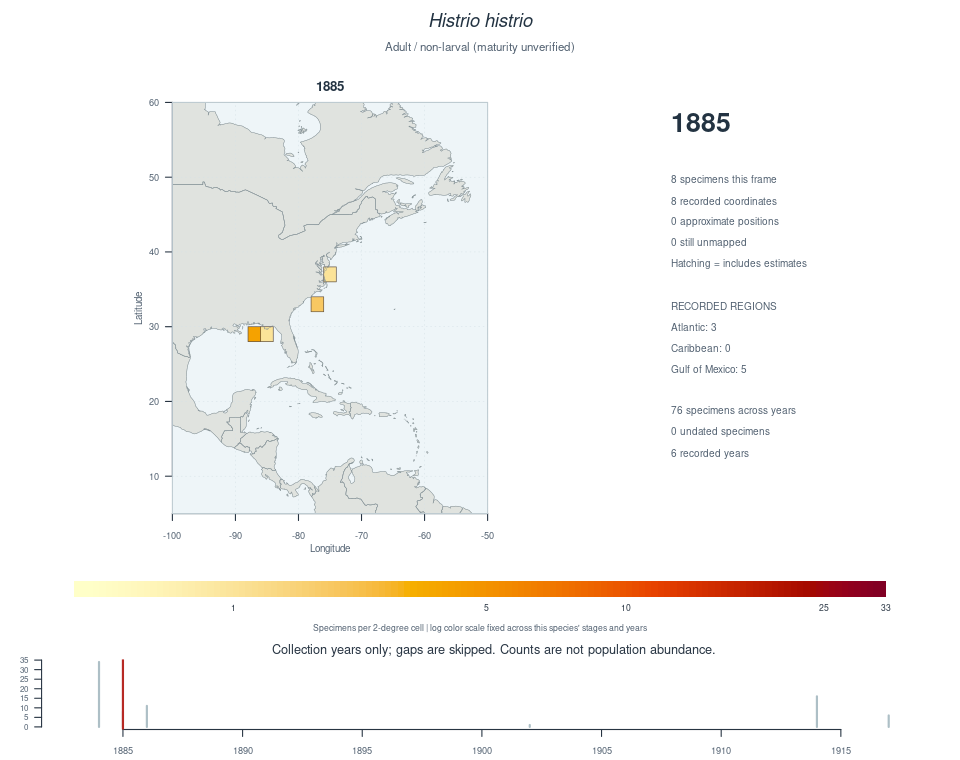
1885 · 8 specimens: 8 recorded coordinates, 0 approximate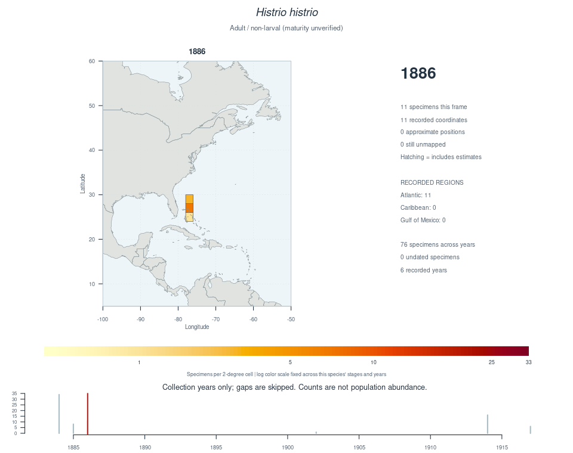
1886 · 11 specimens: 11 recorded coordinates, 0 approximate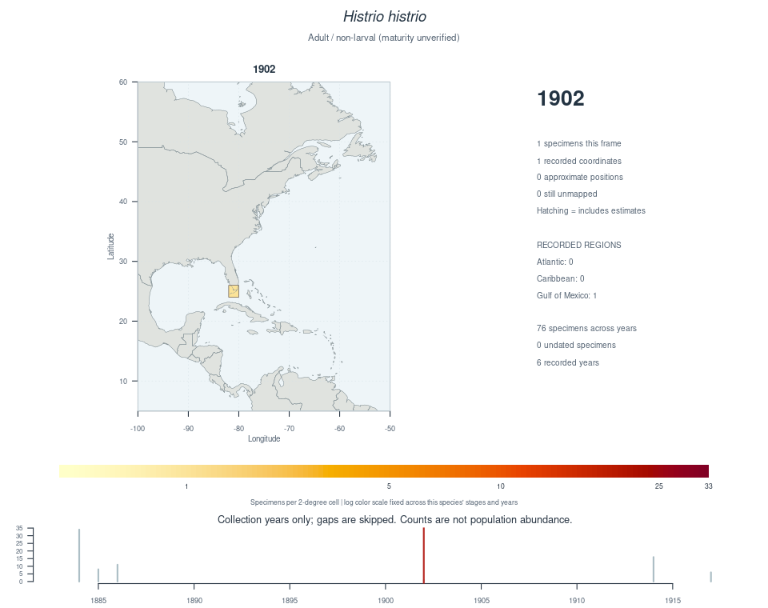
1902 · 1 specimens: 1 recorded coordinates, 0 approximate1914 · 16 specimens: 16 recorded coordinates, 0 approximate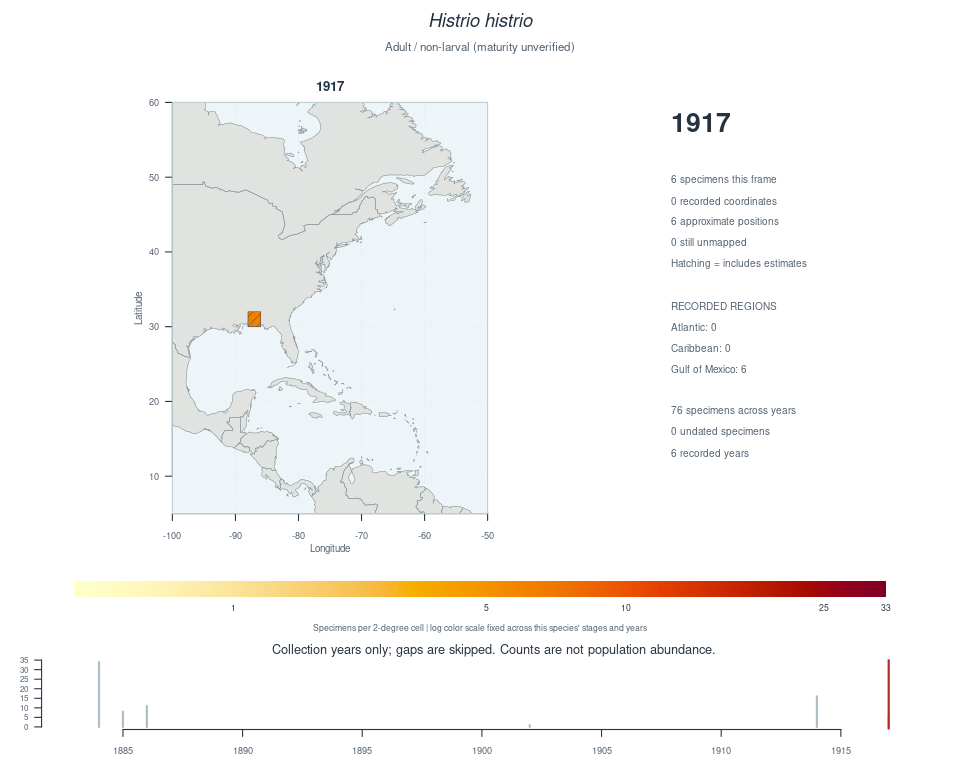
1917 · 6 specimens: 0 recorded coordinates, 6 approximate Larva 29 specimens · 29 recorded coordinates · 0 approximate positions
1914 Play GIF ← Year
1914 — 28 specimens (0 approximate)
1919 — 1 specimens (0 approximate)
→
Static geographic map · 1914
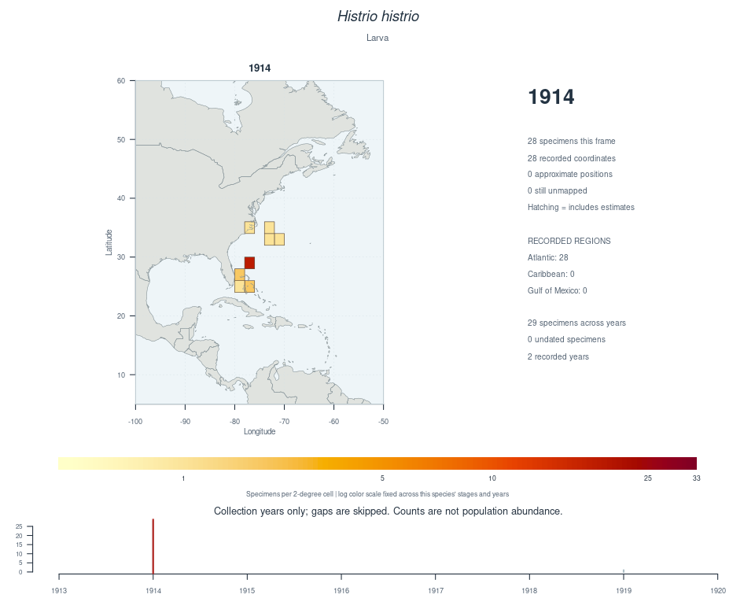
Open selected year PNG · Annual map PDF · Download GIF
Show all year maps
1914 · 28 specimens: 28 recorded coordinates, 0 approximate1919 · 1 specimens: 1 recorded coordinates, 0 approximate Hyporhamphus unifasciatus 101 dated specimens through 1930 + 3 undated · 28 lots · 8 sampled years · 3 regions · 59% dated with recorded coordinates
43 specimens in 14 lots use approximate display positions.
Adult / non-larval (maturity unverified) 53 specimens · 12 recorded coordinates · 41 approximate positions
1884 Play GIF ← Year
1884 — 41 specimens (37 approximate)
1885 — 3 specimens (0 approximate)
1886 — 3 specimens (0 approximate)
1899 — 1 specimens (1 approximate)
1915 — 2 specimens (0 approximate)
Undated — 3 specimens (3 approximate)
→
Static geographic map · 1884
Open selected year PNG · Annual map PDF · Download GIF
Show all year maps
1884 · 41 specimens: 4 recorded coordinates, 37 approximate1885 · 3 specimens: 3 recorded coordinates, 0 approximate1886 · 3 specimens: 3 recorded coordinates, 0 approximate1899 · 1 specimens: 0 recorded coordinates, 1 approximate1915 · 2 specimens: 2 recorded coordinates, 0 approximateUndated · 3 specimens: 0 recorded coordinates, 3 approximate Larva 51 specimens · 49 recorded coordinates · 2 approximate positions
1914 Play GIF ← Year
1914 — 46 specimens (0 approximate)
1916 — 3 specimens (0 approximate)
1920 — 2 specimens (2 approximate)
→
Static geographic map · 1914
Open selected year PNG · Annual map PDF · Download GIF
Show all year maps
1914 · 46 specimens: 46 recorded coordinates, 0 approximate1916 · 3 specimens: 3 recorded coordinates, 0 approximate1920 · 2 specimens: 0 recorded coordinates, 2 approximate Tautogolabrus adspersus 103 dated specimens through 1930 + 0 undated · 22 lots · 3 sampled years · 1 regions · 83% dated with recorded coordinates
18 specimens in 2 lots use approximate display positions.
Adult / non-larval (maturity unverified) 103 specimens · 85 recorded coordinates · 18 approximate positions
1892 Play GIF ← Year
1892 — 75 specimens (18 approximate)
1899 — 13 specimens (0 approximate)
1915 — 15 specimens (0 approximate)
→
Static geographic map · 1892
Open selected year PNG · Annual map PDF · Download GIF
Show all year maps
1892 · 75 specimens: 57 recorded coordinates, 18 approximate1899 · 13 specimens: 13 recorded coordinates, 0 approximate1915 · 15 specimens: 15 recorded coordinates, 0 approximate Larva: no specimens recorded.
Clupea harengus 51 dated specimens through 1930 + 50 undated · 3 lots · 2 sampled years · 1 regions · 0% dated with recorded coordinates
101 specimens in 3 lots use approximate display positions.
Adult / non-larval (maturity unverified) 101 specimens · 0 recorded coordinates · 101 approximate positions
1893 Play GIF ← Year
1893 — 1 specimens (1 approximate)
1894 — 50 specimens (50 approximate)
Undated — 50 specimens (50 approximate)
→
Static geographic map · 1893
Open selected year PNG · Annual map PDF · Download GIF
Show all year maps
1893 · 1 specimens: 0 recorded coordinates, 1 approximate1894 · 50 specimens: 0 recorded coordinates, 50 approximateUndated · 50 specimens: 0 recorded coordinates, 50 approximate Larva: no specimens recorded.
Myctophum affine 101 dated specimens through 1930 + 0 undated · 9 lots · 3 sampled years · 1 regions · 100% dated with recorded coordinates
0 specimens in 0 lots use approximate display positions.
Adult / non-larval (maturity unverified) 98 specimens · 98 recorded coordinates · 0 approximate positions
1885 Play GIF ← Year
1885 — 3 specimens (0 approximate)
1886 — 94 specimens (0 approximate)
1914 — 1 specimens (0 approximate)
→
Static geographic map · 1885
Open selected year PNG · Annual map PDF · Download GIF
Show all year maps
1885 · 3 specimens: 3 recorded coordinates, 0 approximate1886 · 94 specimens: 94 recorded coordinates, 0 approximate1914 · 1 specimens: 1 recorded coordinates, 0 approximate Larva 3 specimens · 3 recorded coordinates · 0 approximate positions
1885 Play GIF ← Year
1885 — 3 specimens (0 approximate)
→
Static geographic map · 1885
Open selected year PNG · Annual map PDF · Download GIF
Show all year maps
1885 · 3 specimens: 3 recorded coordinates, 0 approximate Dibranchus atlanticus 98 dated specimens through 1930 + 0 undated · 37 lots · 7 sampled years · 3 regions · 100% dated with recorded coordinates
0 specimens in 0 lots use approximate display positions.
Adult / non-larval (maturity unverified) 98 specimens · 98 recorded coordinates · 0 approximate positions
1881 Play GIF ← Year
1881 — 13 specimens (0 approximate)
1882 — 9 specimens (0 approximate)
1883 — 14 specimens (0 approximate)
1884 — 6 specimens (0 approximate)
1885 — 28 specimens (0 approximate)
1886 — 9 specimens (0 approximate)
1902 — 19 specimens (0 approximate)
→
Static geographic map · 1881
Open selected year PNG · Annual map PDF · Download GIF
Show all year maps
1881 · 13 specimens: 13 recorded coordinates, 0 approximate1882 · 9 specimens: 9 recorded coordinates, 0 approximate1883 · 14 specimens: 14 recorded coordinates, 0 approximate1884 · 6 specimens: 6 recorded coordinates, 0 approximate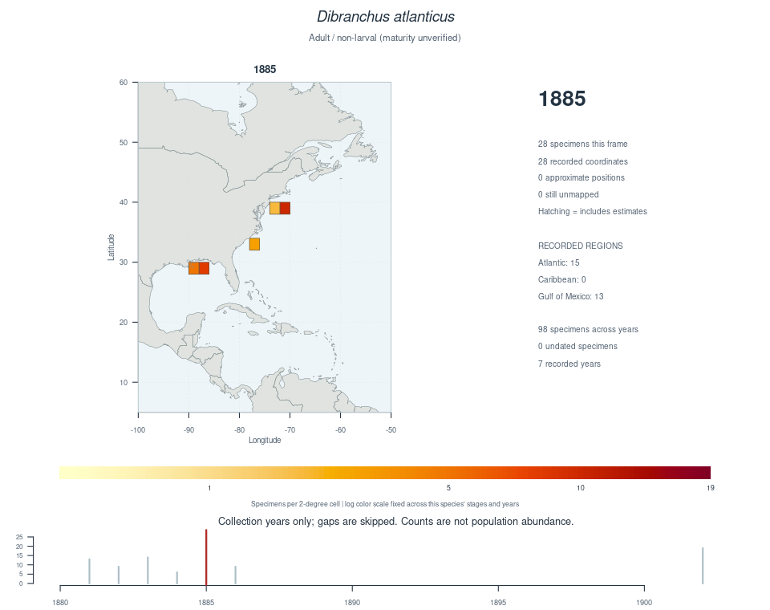
1885 · 28 specimens: 28 recorded coordinates, 0 approximate1886 · 9 specimens: 9 recorded coordinates, 0 approximate1902 · 19 specimens: 19 recorded coordinates, 0 approximate Larva: no specimens recorded.
Ammodytes dubius 92 dated specimens through 1930 + 0 undated · 3 lots · 2 sampled years · 1 regions · 100% dated with recorded coordinates
0 specimens in 0 lots use approximate display positions.
Adult / non-larval (maturity unverified) 92 specimens · 92 recorded coordinates · 0 approximate positions
1896 Play GIF ← Year
1896 — 90 specimens (0 approximate)
1915 — 2 specimens (0 approximate)
→
Static geographic map · 1896
Open selected year PNG · Annual map PDF · Download GIF
Show all year maps
1896 · 90 specimens: 90 recorded coordinates, 0 approximate1915 · 2 specimens: 2 recorded coordinates, 0 approximate Larva: no specimens recorded.
Harengula humeralis 92 dated specimens through 1930 + 0 undated · 11 lots · 6 sampled years · 2 regions · 10% dated with recorded coordinates
83 specimens in 10 lots use approximate display positions.
Adult / non-larval (maturity unverified) 92 specimens · 9 recorded coordinates · 83 approximate positions
1884 Play GIF ← Year
1884 — 56 specimens (56 approximate)
1885 — 20 specimens (20 approximate)
1886 — 4 specimens (4 approximate)
1887 — 2 specimens (2 approximate)
1888 — 1 specimens (1 approximate)
1914 — 9 specimens (0 approximate)
→
Static geographic map · 1884
Open selected year PNG · Annual map PDF · Download GIF
Show all year maps
1884 · 56 specimens: 0 recorded coordinates, 56 approximate1885 · 20 specimens: 0 recorded coordinates, 20 approximate1886 · 4 specimens: 0 recorded coordinates, 4 approximate1887 · 2 specimens: 0 recorded coordinates, 2 approximate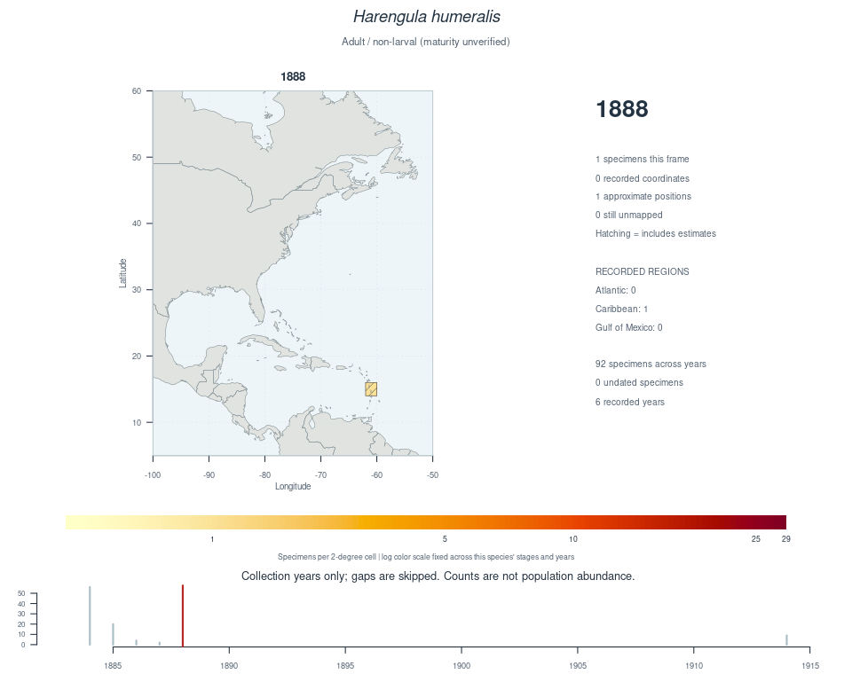
1888 · 1 specimens: 0 recorded coordinates, 1 approximate1914 · 9 specimens: 9 recorded coordinates, 0 approximate Larva: no specimens recorded.
Gobiosoma ginsburgi 90 dated specimens through 1930 + 1 undated · 12 lots · 5 sampled years · 1 regions · 98% dated with recorded coordinates
1 specimens in 1 lots use approximate display positions.
Adult / non-larval (maturity unverified) 91 specimens · 90 recorded coordinates · 1 approximate positions
1914 Play GIF ← Year
1914 — 1 specimens (0 approximate)
1915 — 62 specimens (0 approximate)
1916 — 25 specimens (0 approximate)
1920 — 1 specimens (0 approximate)
1922 — 1 specimens (1 approximate)
Undated — 1 specimens (0 approximate)
→
Static geographic map · 1914
Open selected year PNG · Annual map PDF · Download GIF
Show all year maps
1914 · 1 specimens: 1 recorded coordinates, 0 approximate1915 · 62 specimens: 62 recorded coordinates, 0 approximate1916 · 25 specimens: 25 recorded coordinates, 0 approximate1920 · 1 specimens: 1 recorded coordinates, 0 approximate1922 · 1 specimens: 0 recorded coordinates, 1 approximateUndated · 1 specimens: 1 recorded coordinates, 0 approximate Larva: no specimens recorded.
Syacium papillosum 90 dated specimens through 1930 + 0 undated · 8 lots · 2 sampled years · 1 regions · 51% dated with recorded coordinates
44 specimens in 3 lots use approximate display positions.
Adult / non-larval (maturity unverified) 90 specimens · 46 recorded coordinates · 44 approximate positions
1902 Play GIF ← Year
1902 — 18 specimens (0 approximate)
1917 — 72 specimens (44 approximate)
→
Static geographic map · 1902
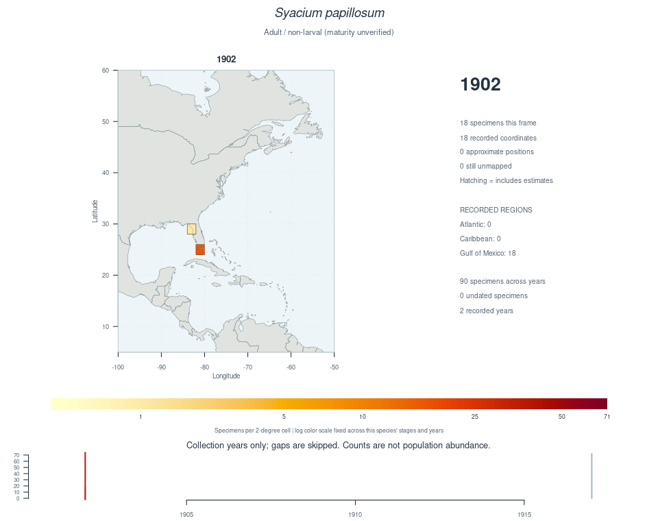
Open selected year PNG · Annual map PDF · Download GIF
Show all year maps
1902 · 18 specimens: 18 recorded coordinates, 0 approximate1917 · 72 specimens: 28 recorded coordinates, 44 approximate Larva: no specimens recorded.
Helicolenus maderensis 86 dated specimens through 1930 + 0 undated · 20 lots · 6 sampled years · 2 regions · 99% dated with recorded coordinates
1 specimens in 1 lots use approximate display positions.
Adult / non-larval (maturity unverified) 86 specimens · 85 recorded coordinates · 1 approximate positions
1880 Play GIF ← Year
1880 — 19 specimens (1 approximate)
1881 — 21 specimens (0 approximate)
1882 — 11 specimens (0 approximate)
1883 — 15 specimens (0 approximate)
1884 — 8 specimens (0 approximate)
1885 — 12 specimens (0 approximate)
→
Static geographic map · 1880
Open selected year PNG · Annual map PDF · Download GIF
Show all year maps
1880 · 19 specimens: 18 recorded coordinates, 1 approximate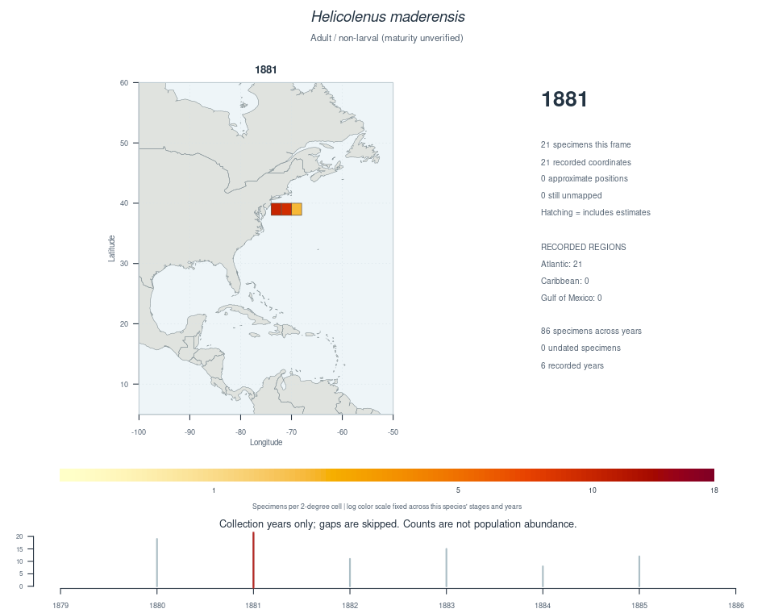
1881 · 21 specimens: 21 recorded coordinates, 0 approximate1882 · 11 specimens: 11 recorded coordinates, 0 approximate1883 · 15 specimens: 15 recorded coordinates, 0 approximate1884 · 8 specimens: 8 recorded coordinates, 0 approximate1885 · 12 specimens: 12 recorded coordinates, 0 approximate Larva: no specimens recorded.
Lycenchelys verrillii 82 dated specimens through 1930 + 0 undated · 25 lots · 6 sampled years · 1 regions · 99% dated with recorded coordinates
1 specimens in 1 lots use approximate display positions.
Adult / non-larval (maturity unverified) 82 specimens · 81 recorded coordinates · 1 approximate positions
1880 Play GIF ← Year
1880 — 10 specimens (0 approximate)
1881 — 19 specimens (1 approximate)
1882 — 3 specimens (0 approximate)
1884 — 40 specimens (0 approximate)
1885 — 5 specimens (0 approximate)
1886 — 5 specimens (0 approximate)
→
Static geographic map · 1880
Open selected year PNG · Annual map PDF · Download GIF
Show all year maps
1880 · 10 specimens: 10 recorded coordinates, 0 approximate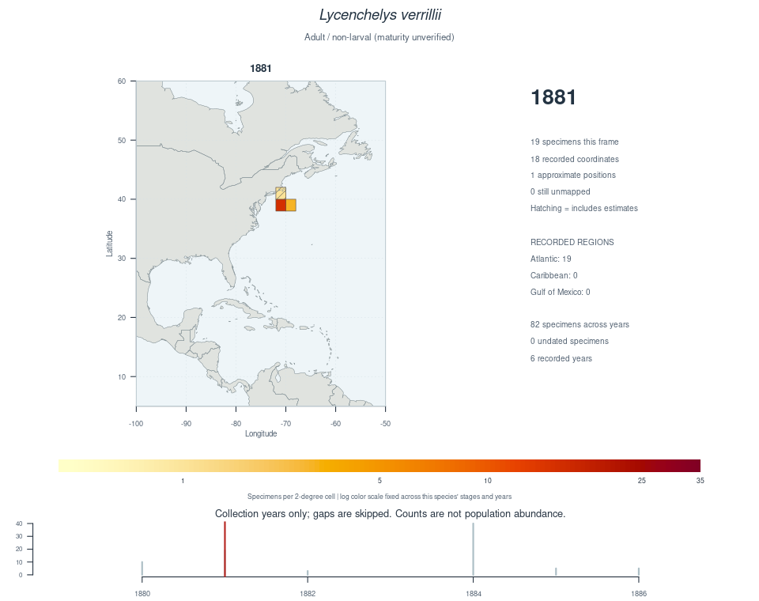
1881 · 19 specimens: 18 recorded coordinates, 1 approximate1882 · 3 specimens: 3 recorded coordinates, 0 approximate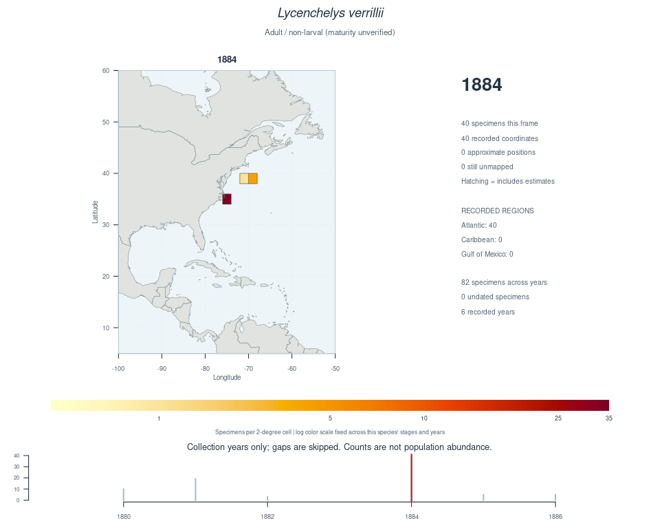
1884 · 40 specimens: 40 recorded coordinates, 0 approximate1885 · 5 specimens: 5 recorded coordinates, 0 approximate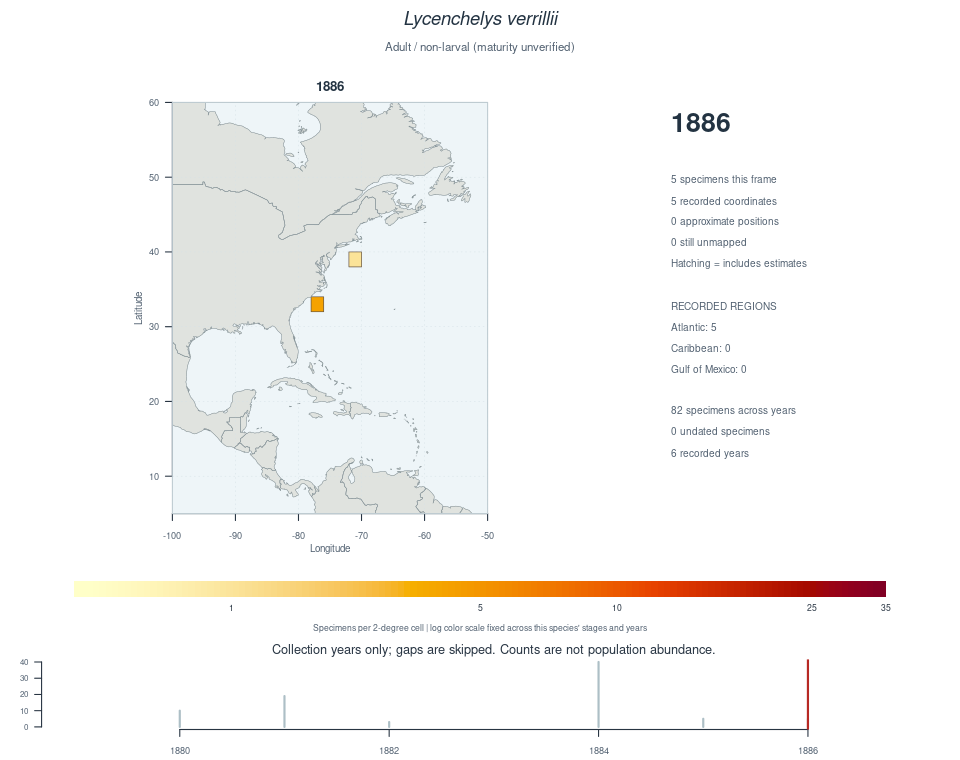
1886 · 5 specimens: 5 recorded coordinates, 0 approximate Larva: no specimens recorded.
Pseudopleuronectes americanus 75 dated specimens through 1930 + 5 undated · 28 lots · 9 sampled years · 1 regions · 82% dated with recorded coordinates
9 specimens in 8 lots use approximate display positions.
Adult / non-larval (maturity unverified) 80 specimens · 71 recorded coordinates · 9 approximate positions
1880 Play GIF ← Year
1880 — 1 specimens (1 approximate)
1882 — 1 specimens (1 approximate)
1887 — 1 specimens (1 approximate)
1890 — 3 specimens (3 approximate)
1892 — 11 specimens (0 approximate)
1899 — 14 specimens (0 approximate)
1914 — 1 specimens (0 approximate)
1916 — 42 specimens (2 approximate)
1921 — 1 specimens (1 approximate)
Undated — 5 specimens (0 approximate)
→
Static geographic map · 1880
Open selected year PNG · Annual map PDF · Download GIF
Show all year maps
1880 · 1 specimens: 0 recorded coordinates, 1 approximate1882 · 1 specimens: 0 recorded coordinates, 1 approximate1887 · 1 specimens: 0 recorded coordinates, 1 approximate1890 · 3 specimens: 0 recorded coordinates, 3 approximate1892 · 11 specimens: 11 recorded coordinates, 0 approximate1899 · 14 specimens: 14 recorded coordinates, 0 approximate1914 · 1 specimens: 1 recorded coordinates, 0 approximate1916 · 42 specimens: 40 recorded coordinates, 2 approximate1921 · 1 specimens: 0 recorded coordinates, 1 approximateUndated · 5 specimens: 5 recorded coordinates, 0 approximate Larva: no specimens recorded.
Chlorophthalmus agassizi 79 dated specimens through 1930 + 0 undated · 20 lots · 4 sampled years · 2 regions · 100% dated with recorded coordinates
0 specimens in 0 lots use approximate display positions.
Adult / non-larval (maturity unverified) 79 specimens · 79 recorded coordinates · 0 approximate positions
1884 Play GIF ← Year
1884 — 17 specimens (0 approximate)
1885 — 53 specimens (0 approximate)
1886 — 8 specimens (0 approximate)
1919 — 1 specimens (0 approximate)
→
Static geographic map · 1884
Open selected year PNG · Annual map PDF · Download GIF
Show all year maps
1884 · 17 specimens: 17 recorded coordinates, 0 approximate1885 · 53 specimens: 53 recorded coordinates, 0 approximate1886 · 8 specimens: 8 recorded coordinates, 0 approximate1919 · 1 specimens: 1 recorded coordinates, 0 approximate Larva: no specimens recorded.
Anchoa lamprotaenia 77 dated specimens through 1930 + 0 undated · 6 lots · 4 sampled years · 2 regions · 100% dated with recorded coordinates
0 specimens in 0 lots use approximate display positions.
Adult / non-larval (maturity unverified) 77 specimens · 77 recorded coordinates · 0 approximate positions
1885 Play GIF ← Year
1885 — 19 specimens (0 approximate)
1886 — 1 specimens (0 approximate)
1899 — 14 specimens (0 approximate)
1919 — 43 specimens (0 approximate)
→
Static geographic map · 1885
Open selected year PNG · Annual map PDF · Download GIF
Show all year maps
1885 · 19 specimens: 19 recorded coordinates, 0 approximate1886 · 1 specimens: 1 recorded coordinates, 0 approximate1899 · 14 specimens: 14 recorded coordinates, 0 approximate1919 · 43 specimens: 43 recorded coordinates, 0 approximate Larva: no specimens recorded.
Eucinostomus argenteus 77 dated specimens through 1930 + 0 undated · 10 lots · 3 sampled years · 1 regions · 8% dated with recorded coordinates
71 specimens in 7 lots use approximate display positions.
Adult / non-larval (maturity unverified) 77 specimens · 6 recorded coordinates · 71 approximate positions
1884 Play GIF ← Year
1884 — 66 specimens (66 approximate)
1885 — 5 specimens (5 approximate)
1899 — 6 specimens (0 approximate)
→
Static geographic map · 1884
Open selected year PNG · Annual map PDF · Download GIF
Show all year maps
1884 · 66 specimens: 0 recorded coordinates, 66 approximate1885 · 5 specimens: 0 recorded coordinates, 5 approximate1899 · 6 specimens: 6 recorded coordinates, 0 approximate Larva: no specimens recorded.
Myctophum opalinum 73 dated specimens through 1930 + 1 undated · 14 lots · 3 sampled years · 1 regions · 99% dated with recorded coordinates
0 specimens in 0 lots use approximate display positions.
Adult / non-larval (maturity unverified) 74 specimens · 74 recorded coordinates · 0 approximate positions
1885 Play GIF ← Year
1885 — 14 specimens (0 approximate)
1886 — 55 specimens (0 approximate)
1887 — 4 specimens (0 approximate)
Undated — 1 specimens (0 approximate)
→
Static geographic map · 1885
Open selected year PNG · Annual map PDF · Download GIF
Show all year maps
1885 · 14 specimens: 14 recorded coordinates, 0 approximate1886 · 55 specimens: 55 recorded coordinates, 0 approximate1887 · 4 specimens: 4 recorded coordinates, 0 approximateUndated · 1 specimens: 1 recorded coordinates, 0 approximate Larva: no specimens recorded.
Cheilopogon furcatus 72 dated specimens through 1930 + 0 undated · 31 lots · 3 sampled years · 1 regions · 83% dated with recorded coordinates
12 specimens in 9 lots use approximate display positions.
Adult / non-larval (maturity unverified) 10 specimens · 10 recorded coordinates · 0 approximate positions
1886 Play GIF ← Year
1886 — 2 specimens (0 approximate)
1914 — 4 specimens (0 approximate)
1915 — 4 specimens (0 approximate)
→
Static geographic map · 1886
Open selected year PNG · Annual map PDF · Download GIF
Show all year maps
1886 · 2 specimens: 2 recorded coordinates, 0 approximate1914 · 4 specimens: 4 recorded coordinates, 0 approximate1915 · 4 specimens: 4 recorded coordinates, 0 approximate Larva 62 specimens · 50 recorded coordinates · 12 approximate positions
1914 Play GIF ← Year
1914 — 61 specimens (11 approximate)
1915 — 1 specimens (1 approximate)
→
Static geographic map · 1914
Open selected year PNG · Annual map PDF · Download GIF
Show all year maps
1914 · 61 specimens: 50 recorded coordinates, 11 approximate1915 · 1 specimens: 0 recorded coordinates, 1 approximate Lutjanus synagris 69 dated specimens through 1930 + 2 undated · 24 lots · 7 sampled years · 3 regions · 61% dated with recorded coordinates
28 specimens in 13 lots use approximate display positions.
Adult / non-larval (maturity unverified) 71 specimens · 43 recorded coordinates · 28 approximate positions
1884 Play GIF ← Year
1884 — 31 specimens (16 approximate)
1885 — 15 specimens (0 approximate)
1886 — 2 specimens (2 approximate)
1899 — 10 specimens (4 approximate)
1902 — 3 specimens (0 approximate)
1903 — 5 specimens (1 approximate)
1917 — 3 specimens (3 approximate)
Undated — 2 specimens (2 approximate)
→
Static geographic map · 1884
Open selected year PNG · Annual map PDF · Download GIF
Show all year maps
1884 · 31 specimens: 15 recorded coordinates, 16 approximate1885 · 15 specimens: 15 recorded coordinates, 0 approximate1886 · 2 specimens: 0 recorded coordinates, 2 approximate1899 · 10 specimens: 6 recorded coordinates, 4 approximate1902 · 3 specimens: 3 recorded coordinates, 0 approximate1903 · 5 specimens: 4 recorded coordinates, 1 approximate1917 · 3 specimens: 0 recorded coordinates, 3 approximateUndated · 2 specimens: 0 recorded coordinates, 2 approximate Larva: no specimens recorded.
Coelorinchus carminatus 70 dated specimens through 1930 + 0 undated · 24 lots · 6 sampled years · 3 regions · 96% dated with recorded coordinates
3 specimens in 1 lots use approximate display positions.
Adult / non-larval (maturity unverified) 70 specimens · 67 recorded coordinates · 3 approximate positions
1880 Play GIF ← Year
1880 — 16 specimens (3 approximate)
1881 — 14 specimens (0 approximate)
1882 — 2 specimens (0 approximate)
1883 — 7 specimens (0 approximate)
1884 — 8 specimens (0 approximate)
1885 — 23 specimens (0 approximate)
→
Static geographic map · 1880
Open selected year PNG · Annual map PDF · Download GIF
Show all year maps
1880 · 16 specimens: 13 recorded coordinates, 3 approximate1881 · 14 specimens: 14 recorded coordinates, 0 approximate1882 · 2 specimens: 2 recorded coordinates, 0 approximate1883 · 7 specimens: 7 recorded coordinates, 0 approximate1884 · 8 specimens: 8 recorded coordinates, 0 approximate1885 · 23 specimens: 23 recorded coordinates, 0 approximate Larva: no specimens recorded.
Lycodes terraenovae 67 dated specimens through 1930 + 0 undated · 27 lots · 5 sampled years · 1 regions · 100% dated with recorded coordinates
0 specimens in 0 lots use approximate display positions.
Adult / non-larval (maturity unverified) 67 specimens · 67 recorded coordinates · 0 approximate positions
1883 Play GIF ← Year
1883 — 16 specimens (0 approximate)
1884 — 11 specimens (0 approximate)
1885 — 7 specimens (0 approximate)
1886 — 14 specimens (0 approximate)
1887 — 19 specimens (0 approximate)
→
Static geographic map · 1883
Open selected year PNG · Annual map PDF · Download GIF
Show all year maps
1883 · 16 specimens: 16 recorded coordinates, 0 approximate1884 · 11 specimens: 11 recorded coordinates, 0 approximate1885 · 7 specimens: 7 recorded coordinates, 0 approximate1886 · 14 specimens: 14 recorded coordinates, 0 approximate1887 · 19 specimens: 19 recorded coordinates, 0 approximate Larva: no specimens recorded.
Mullus auratus 67 dated specimens through 1930 + 0 undated · 3 lots · 2 sampled years · 2 regions · 31% dated with recorded coordinates
46 specimens in 1 lots use approximate display positions.
Adult / non-larval (maturity unverified) 67 specimens · 21 recorded coordinates · 46 approximate positions
1915 Play GIF ← Year
1915 — 46 specimens (46 approximate)
1917 — 21 specimens (0 approximate)
→
Static geographic map · 1915
Open selected year PNG · Annual map PDF · Download GIF
Show all year maps
1915 · 46 specimens: 0 recorded coordinates, 46 approximate1917 · 21 specimens: 21 recorded coordinates, 0 approximate Larva: no specimens recorded.
Symphurus plagiusa 67 dated specimens through 1930 + 0 undated · 35 lots · 8 sampled years · 3 regions · 90% dated with recorded coordinates
7 specimens in 4 lots use approximate display positions.
Adult / non-larval (maturity unverified) 65 specimens · 58 recorded coordinates · 7 approximate positions
1891 Play GIF ← Year
1891 — 24 specimens (3 approximate)
1898 — 4 specimens (1 approximate)
1899 — 4 specimens (0 approximate)
1902 — 17 specimens (0 approximate)
1903 — 1 specimens (0 approximate)
1915 — 2 specimens (0 approximate)
1916 — 6 specimens (0 approximate)
1917 — 7 specimens (3 approximate)
→
Static geographic map · 1891
Open selected year PNG · Annual map PDF · Download GIF
Show all year maps
1891 · 24 specimens: 21 recorded coordinates, 3 approximate1898 · 4 specimens: 3 recorded coordinates, 1 approximate1899 · 4 specimens: 4 recorded coordinates, 0 approximate1902 · 17 specimens: 17 recorded coordinates, 0 approximate1903 · 1 specimens: 1 recorded coordinates, 0 approximate1915 · 2 specimens: 2 recorded coordinates, 0 approximate1916 · 6 specimens: 6 recorded coordinates, 0 approximate1917 · 7 specimens: 4 recorded coordinates, 3 approximate Larva 2 specimens · 2 recorded coordinates · 0 approximate positions
1917 Play GIF ← Year
1917 — 2 specimens (0 approximate)
→
Static geographic map · 1917
Open selected year PNG · Annual map PDF · Download GIF
Show all year maps
1917 · 2 specimens: 2 recorded coordinates, 0 approximate Cyclopterus lumpus 65 dated specimens through 1930 + 1 undated · 6 lots · 4 sampled years · 1 regions · 3% dated with recorded coordinates
63 specimens in 3 lots use approximate display positions.
Adult / non-larval (maturity unverified) 65 specimens · 2 recorded coordinates · 63 approximate positions
1882 Play GIF ← Year
1882 — 1 specimens (0 approximate)
1888 — 1 specimens (1 approximate)
1912 — 62 specimens (62 approximate)
Undated — 1 specimens (0 approximate)
→
Static geographic map · 1882
Open selected year PNG · Annual map PDF · Download GIF
Show all year maps
1882 · 1 specimens: 1 recorded coordinates, 0 approximate1888 · 1 specimens: 0 recorded coordinates, 1 approximate1912 · 62 specimens: 0 recorded coordinates, 62 approximateUndated · 1 specimens: 1 recorded coordinates, 0 approximate Larva 1 specimens · 1 recorded coordinates · 0 approximate positions
1916 Play GIF ← Year
1916 — 1 specimens (0 approximate)
→
Static geographic map · 1916
Open selected year PNG · Annual map PDF · Download GIF
Show all year maps
1916 · 1 specimens: 1 recorded coordinates, 0 approximate Haemulon plumierii 57 dated specimens through 1930 + 7 undated · 16 lots · 5 sampled years · 3 regions · 67% dated with recorded coordinates
18 specimens in 6 lots use approximate display positions.
Adult / non-larval (maturity unverified) 64 specimens · 46 recorded coordinates · 18 approximate positions
1884 Play GIF ← Year
1884 — 21 specimens (1 approximate)
1885 — 13 specimens (10 approximate)
1899 — 2 specimens (0 approximate)
1901 — 16 specimens (0 approximate)
1903 — 5 specimens (3 approximate)
Undated — 7 specimens (4 approximate)
→
Static geographic map · 1884
Open selected year PNG · Annual map PDF · Download GIF
Show all year maps
1884 · 21 specimens: 20 recorded coordinates, 1 approximate1885 · 13 specimens: 3 recorded coordinates, 10 approximate1899 · 2 specimens: 2 recorded coordinates, 0 approximate1901 · 16 specimens: 16 recorded coordinates, 0 approximate1903 · 5 specimens: 2 recorded coordinates, 3 approximateUndated · 7 specimens: 3 recorded coordinates, 4 approximate Larva: no specimens recorded.
Menidia peninsulae 64 dated specimens through 1930 + 0 undated · 5 lots · 3 sampled years · 1 regions · 100% dated with recorded coordinates
0 specimens in 0 lots use approximate display positions.
Adult / non-larval (maturity unverified) 64 specimens · 64 recorded coordinates · 0 approximate positions
1885 Play GIF ← Year
1885 — 24 specimens (0 approximate)
1889 — 5 specimens (0 approximate)
1898 — 35 specimens (0 approximate)
→
Static geographic map · 1885
Open selected year PNG · Annual map PDF · Download GIF
Show all year maps
1885 · 24 specimens: 24 recorded coordinates, 0 approximate1889 · 5 specimens: 5 recorded coordinates, 0 approximate1898 · 35 specimens: 35 recorded coordinates, 0 approximate Larva: no specimens recorded.
Phycis chesteri 64 dated specimens through 1930 + 0 undated · 4 lots · 1 sampled years · 1 regions · 27% dated with recorded coordinates
47 specimens in 3 lots use approximate display positions.
Adult / non-larval (maturity unverified) 64 specimens · 17 recorded coordinates · 47 approximate positions
1880 Play GIF ← Year
1880 — 64 specimens (47 approximate)
→
Static geographic map · 1880
Open selected year PNG · Annual map PDF · Download GIF
Show all year maps
1880 · 64 specimens: 17 recorded coordinates, 47 approximate Larva: no specimens recorded.
Sparisoma radians 62 dated specimens through 1930 + 0 undated · 14 lots · 2 sampled years · 2 regions · 95% dated with recorded coordinates
3 specimens in 3 lots use approximate display positions.
Adult / non-larval (maturity unverified) 62 specimens · 59 recorded coordinates · 3 approximate positions
1899 Play GIF ← Year
1899 — 60 specimens (1 approximate)
1903 — 2 specimens (2 approximate)
→
Static geographic map · 1899
Open selected year PNG · Annual map PDF · Download GIF
Show all year maps
1899 · 60 specimens: 59 recorded coordinates, 1 approximate1903 · 2 specimens: 0 recorded coordinates, 2 approximate Larva: no specimens recorded.
Citharichthys spilopterus 61 dated specimens through 1930 + 0 undated · 8 lots · 3 sampled years · 2 regions · 36% dated with recorded coordinates
39 specimens in 5 lots use approximate display positions.
Adult / non-larval (maturity unverified) 32 specimens · 14 recorded coordinates · 18 approximate positions
1884 Play GIF ← Year
1884 — 2 specimens (2 approximate)
1899 — 14 specimens (0 approximate)
1917 — 16 specimens (16 approximate)
→
Static geographic map · 1884
Open selected year PNG · Annual map PDF · Download GIF
Show all year maps
1884 · 2 specimens: 0 recorded coordinates, 2 approximate1899 · 14 specimens: 14 recorded coordinates, 0 approximate1917 · 16 specimens: 0 recorded coordinates, 16 approximate Larva 29 specimens · 8 recorded coordinates · 21 approximate positions
1917 Play GIF ← Year
1917 — 29 specimens (21 approximate)
→
Static geographic map · 1917
Open selected year PNG · Annual map PDF · Download GIF
Show all year maps
1917 · 29 specimens: 8 recorded coordinates, 21 approximate Brevoortia patronus 60 dated specimens through 1930 + 0 undated · 5 lots · 1 sampled years · 1 regions · 12% dated with recorded coordinates
53 specimens in 4 lots use approximate display positions.
Adult / non-larval (maturity unverified) 60 specimens · 7 recorded coordinates · 53 approximate positions
1917 Play GIF ← Year
1917 — 60 specimens (53 approximate)
→
Static geographic map · 1917
Open selected year PNG · Annual map PDF · Download GIF
Show all year maps
1917 · 60 specimens: 7 recorded coordinates, 53 approximate Larva: no specimens recorded.
Centrobranchus nigroocellatus 58 dated specimens through 1930 + 0 undated · 3 lots · 1 sampled years · 1 regions · 100% dated with recorded coordinates
0 specimens in 0 lots use approximate display positions.
Adult / non-larval (maturity unverified) 58 specimens · 58 recorded coordinates · 0 approximate positions
1914 Play GIF ← Year
1914 — 58 specimens (0 approximate)
→
Static geographic map · 1914
Open selected year PNG · Annual map PDF · Download GIF
Show all year maps
1914 · 58 specimens: 58 recorded coordinates, 0 approximate Larva: no specimens recorded.
Chromis enchrysurus 58 dated specimens through 1930 + 0 undated · 8 lots · 1 sampled years · 1 regions · 100% dated with recorded coordinates
0 specimens in 0 lots use approximate display positions.
Adult / non-larval (maturity unverified) 58 specimens · 58 recorded coordinates · 0 approximate positions
1885 Play GIF ← Year
1885 — 58 specimens (0 approximate)
→
Static geographic map · 1885
Open selected year PNG · Annual map PDF · Download GIF
Show all year maps
1885 · 58 specimens: 58 recorded coordinates, 0 approximate Larva: no specimens recorded.
Eucinostomus gula 57 dated specimens through 1930 + 0 undated · 5 lots · 3 sampled years · 2 regions · 56% dated with recorded coordinates
25 specimens in 3 lots use approximate display positions.
Adult / non-larval (maturity unverified) 57 specimens · 32 recorded coordinates · 25 approximate positions
1884 Play GIF ← Year
1884 — 7 specimens (7 approximate)
1885 — 32 specimens (0 approximate)
1887 — 18 specimens (18 approximate)
→
Static geographic map · 1884
Open selected year PNG · Annual map PDF · Download GIF
Show all year maps
1884 · 7 specimens: 0 recorded coordinates, 7 approximate1885 · 32 specimens: 32 recorded coordinates, 0 approximate1887 · 18 specimens: 0 recorded coordinates, 18 approximate Larva: no specimens recorded.
Lutjanus apodus 55 dated specimens through 1930 + 2 undated · 24 lots · 5 sampled years · 2 regions · 47% dated with recorded coordinates
30 specimens in 12 lots use approximate display positions.
Adult / non-larval (maturity unverified) 57 specimens · 27 recorded coordinates · 30 approximate positions
1884 Play GIF ← Year
1884 — 19 specimens (19 approximate)
1885 — 4 specimens (4 approximate)
1886 — 4 specimens (4 approximate)
1899 — 27 specimens (0 approximate)
1903 — 1 specimens (1 approximate)
Undated — 2 specimens (2 approximate)
→
Static geographic map · 1884
Open selected year PNG · Annual map PDF · Download GIF
Show all year maps
1884 · 19 specimens: 0 recorded coordinates, 19 approximate1885 · 4 specimens: 0 recorded coordinates, 4 approximate1886 · 4 specimens: 0 recorded coordinates, 4 approximate1899 · 27 specimens: 27 recorded coordinates, 0 approximate1903 · 1 specimens: 0 recorded coordinates, 1 approximateUndated · 2 specimens: 0 recorded coordinates, 2 approximate Larva: no specimens recorded.
Cynoscion nothus 55 dated specimens through 1930 + 0 undated · 4 lots · 2 sampled years · 2 regions · 100% dated with recorded coordinates
0 specimens in 0 lots use approximate display positions.
Adult / non-larval (maturity unverified) 55 specimens · 55 recorded coordinates · 0 approximate positions
1884 Play GIF ← Year
1884 — 18 specimens (0 approximate)
1919 — 37 specimens (0 approximate)
→
Static geographic map · 1884
Open selected year PNG · Annual map PDF · Download GIF
Show all year maps
1884 · 18 specimens: 18 recorded coordinates, 0 approximate1919 · 37 specimens: 37 recorded coordinates, 0 approximate Larva: no specimens recorded.
Liparis inquilinus 55 dated specimens through 1930 + 0 undated · 3 lots · 2 sampled years · 1 regions · 100% dated with recorded coordinates
0 specimens in 0 lots use approximate display positions.
Adult / non-larval (maturity unverified) 25 specimens · 25 recorded coordinates · 0 approximate positions
1913 Play GIF ← Year
1913 — 25 specimens (0 approximate)
→
Static geographic map · 1913
Open selected year PNG · Annual map PDF · Download GIF
Show all year maps
1913 · 25 specimens: 25 recorded coordinates, 0 approximate Larva 30 specimens · 30 recorded coordinates · 0 approximate positions
1884 Play GIF ← Year
1884 — 30 specimens (0 approximate)
→
Static geographic map · 1884
Open selected year PNG · Annual map PDF · Download GIF
Show all year maps
1884 · 30 specimens: 30 recorded coordinates, 0 approximate Nezumia aequalis 54 dated specimens through 1930 + 0 undated · 20 lots · 6 sampled years · 2 regions · 100% dated with recorded coordinates
0 specimens in 0 lots use approximate display positions.
Adult / non-larval (maturity unverified) 54 specimens · 54 recorded coordinates · 0 approximate positions
1881 Play GIF ← Year
1881 — 1 specimens (0 approximate)
1883 — 1 specimens (0 approximate)
1884 — 1 specimens (0 approximate)
1885 — 17 specimens (0 approximate)
1886 — 23 specimens (0 approximate)
1902 — 11 specimens (0 approximate)
→
Static geographic map · 1881
Open selected year PNG · Annual map PDF · Download GIF
Show all year maps
1881 · 1 specimens: 1 recorded coordinates, 0 approximate1883 · 1 specimens: 1 recorded coordinates, 0 approximate1884 · 1 specimens: 1 recorded coordinates, 0 approximate1885 · 17 specimens: 17 recorded coordinates, 0 approximate1886 · 23 specimens: 23 recorded coordinates, 0 approximate1902 · 11 specimens: 11 recorded coordinates, 0 approximate Larva: no specimens recorded.
Bathygobius soporator 53 dated specimens through 1930 + 0 undated · 22 lots · 4 sampled years · 2 regions · 53% dated with recorded coordinates
25 specimens in 10 lots use approximate display positions.
Adult / non-larval (maturity unverified) 53 specimens · 28 recorded coordinates · 25 approximate positions
1884 Play GIF ← Year
1884 — 8 specimens (8 approximate)
1885 — 5 specimens (5 approximate)
1886 — 12 specimens (12 approximate)
1899 — 28 specimens (0 approximate)
→
Static geographic map · 1884
Open selected year PNG · Annual map PDF · Download GIF
Show all year maps
1884 · 8 specimens: 0 recorded coordinates, 8 approximate1885 · 5 specimens: 0 recorded coordinates, 5 approximate1886 · 12 specimens: 0 recorded coordinates, 12 approximate1899 · 28 specimens: 28 recorded coordinates, 0 approximate Larva: no specimens recorded.
Hygophum hygomii 53 dated specimens through 1930 + 0 undated · 12 lots · 6 sampled years · 1 regions · 100% dated with recorded coordinates
0 specimens in 0 lots use approximate display positions.
Adult / non-larval (maturity unverified) 53 specimens · 53 recorded coordinates · 0 approximate positions
1881 Play GIF ← Year
1881 — 1 specimens (0 approximate)
1882 — 1 specimens (0 approximate)
1883 — 1 specimens (0 approximate)
1885 — 19 specimens (0 approximate)
1886 — 23 specimens (0 approximate)
1887 — 8 specimens (0 approximate)
→
Static geographic map · 1881
Open selected year PNG · Annual map PDF · Download GIF
Show all year maps
1881 · 1 specimens: 1 recorded coordinates, 0 approximate1882 · 1 specimens: 1 recorded coordinates, 0 approximate1883 · 1 specimens: 1 recorded coordinates, 0 approximate1885 · 19 specimens: 19 recorded coordinates, 0 approximate1886 · 23 specimens: 23 recorded coordinates, 0 approximate1887 · 8 specimens: 8 recorded coordinates, 0 approximate Larva: no specimens recorded.
Paralichthys dentatus 53 dated specimens through 1930 + 0 undated · 23 lots · 9 sampled years · 2 regions · 79% dated with recorded coordinates
11 specimens in 7 lots use approximate display positions.
Adult / non-larval (maturity unverified) 53 specimens · 42 recorded coordinates · 11 approximate positions
1891 Play GIF ← Year
1891 — 4 specimens (1 approximate)
1892 — 10 specimens (2 approximate)
1894 — 2 specimens (0 approximate)
1899 — 1 specimens (0 approximate)
1914 — 7 specimens (0 approximate)
1916 — 5 specimens (1 approximate)
1917 — 1 specimens (0 approximate)
1920 — 8 specimens (6 approximate)
1921 — 15 specimens (1 approximate)
→
Static geographic map · 1891
Open selected year PNG · Annual map PDF · Download GIF
Show all year maps
1891 · 4 specimens: 3 recorded coordinates, 1 approximate1892 · 10 specimens: 8 recorded coordinates, 2 approximate1894 · 2 specimens: 2 recorded coordinates, 0 approximate1899 · 1 specimens: 1 recorded coordinates, 0 approximate1914 · 7 specimens: 7 recorded coordinates, 0 approximate1916 · 5 specimens: 4 recorded coordinates, 1 approximate1917 · 1 specimens: 1 recorded coordinates, 0 approximate1920 · 8 specimens: 2 recorded coordinates, 6 approximate1921 · 15 specimens: 14 recorded coordinates, 1 approximate Larva: no specimens recorded.
Strongylura marina 51 dated specimens through 1930 + 1 undated · 11 lots · 2 sampled years · 1 regions · 46% dated with recorded coordinates
27 specimens in 3 lots use approximate display positions.
Adult / non-larval (maturity unverified) 52 specimens · 25 recorded coordinates · 27 approximate positions
1892 Play GIF ← Year
1892 — 32 specimens (27 approximate)
1899 — 19 specimens (0 approximate)
Undated — 1 specimens (0 approximate)
→
Static geographic map · 1892
Open selected year PNG · Annual map PDF · Download GIF
Show all year maps
1892 · 32 specimens: 5 recorded coordinates, 27 approximate1899 · 19 specimens: 19 recorded coordinates, 0 approximateUndated · 1 specimens: 1 recorded coordinates, 0 approximate Larva: no specimens recorded.
Hypoclydonia bella 51 dated specimens through 1930 + 0 undated · 7 lots · 1 sampled years · 2 regions · 100% dated with recorded coordinates
0 specimens in 0 lots use approximate display positions.
Adult / non-larval (maturity unverified) 51 specimens · 51 recorded coordinates · 0 approximate positions
1885 Play GIF ← Year
1885 — 51 specimens (0 approximate)
→
Static geographic map · 1885
Open selected year PNG · Annual map PDF · Download GIF
Show all year maps
1885 · 51 specimens: 51 recorded coordinates, 0 approximate Larva: no specimens recorded.
Prionotus martis 51 dated specimens through 1930 + 0 undated · 6 lots · 2 sampled years · 1 regions · 96% dated with recorded coordinates
2 specimens in 1 lots use approximate display positions.
Adult / non-larval (maturity unverified) 51 specimens · 49 recorded coordinates · 2 approximate positions
1901 Play GIF ← Year
1901 — 49 specimens (0 approximate)
1913 — 2 specimens (2 approximate)
→
Static geographic map · 1901
Open selected year PNG · Annual map PDF · Download GIF
Show all year maps
1901 · 49 specimens: 49 recorded coordinates, 0 approximate1913 · 2 specimens: 0 recorded coordinates, 2 approximate Larva: no specimens recorded.
Caranx latus 50 dated specimens through 1930 + 0 undated · 8 lots · 4 sampled years · 2 regions · 84% dated with recorded coordinates
8 specimens in 4 lots use approximate display positions.
Adult / non-larval (maturity unverified) 25 specimens · 17 recorded coordinates · 8 approximate positions
1884 Play GIF ← Year
1884 — 5 specimens (5 approximate)
1886 — 10 specimens (3 approximate)
1899 — 10 specimens (0 approximate)
→
Static geographic map · 1884
Open selected year PNG · Annual map PDF · Download GIF
Show all year maps
1884 · 5 specimens: 0 recorded coordinates, 5 approximate1886 · 10 specimens: 7 recorded coordinates, 3 approximate1899 · 10 specimens: 10 recorded coordinates, 0 approximate Larva 25 specimens · 25 recorded coordinates · 0 approximate positions
1914 Play GIF ← Year
1914 — 25 specimens (0 approximate)
→
Static geographic map · 1914
Open selected year PNG · Annual map PDF · Download GIF
Show all year maps
1914 · 25 specimens: 25 recorded coordinates, 0 approximate